旅行
东北行记
第一天
2月6日：初到沈阳
一日三餐：东北水饺
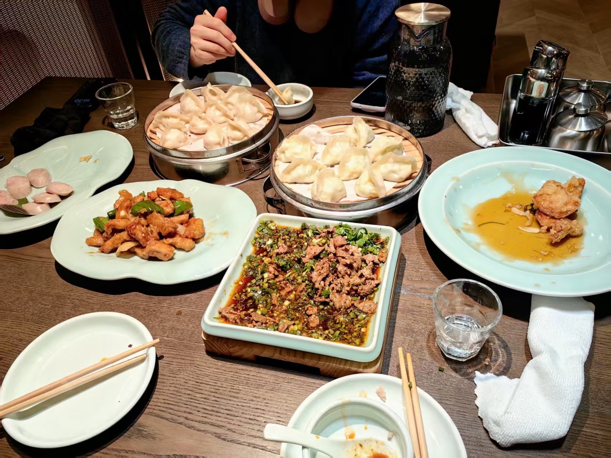
王厚元水饺
晚饭去了老头推荐的这家“王厚元水饺”。看大众点评，似乎是一家网红店，平日里经常要排队1-2个小时。幸好我们到的晚，此刻已经是晚上的七点。我们三人早已是饥肠辘辘，嘴里说的可以吃一头牛，为此tf还特地不吃飞机上的面包简餐，老头连中饭都没吃 。
走进温暖的室内，当得知可以立即坐下点菜开吃时，我感到些许开心。东北的屋里屋外简直是两个世界，屋里在泛黄的灯光照射下，洋溢着暖气，人们偶尔的交谈声更是为气氛多添了一把柴火；可屋外，寒风逼人，走在路上冷空气只往身上最脆弱的地方钻 。
点菜上菜花了不少功夫。下面按图里的顺序从左到右开始点评 。
最左边是灌肠，其实就是香肠和一定淀粉的配合物。肉质硬硬的，被当作冷菜端上来。口感无特别之处，沾着酱料会好吃一些，但也不过如此 。
然后这个像里脊肉的玩意，是今晚最难吃的东西。和锅包肉相像，但却是咸口。肉咬上去硬硬的，虽然是没有参杂淀粉的纯肉，可口感是硬伤，而且吃完腻口的锅包肉之后，这个乃难以下咽了 。
烧烤牛肉。综合来看，这是本晚top2，唯一的缺点是牛肉是冷的，可吃到后面，当作零食来吃也就没此问题。最好的点在于其调料，那酸甜口的烧烤汁，让我想起了小学门口的路边摊鸡柳店 。
两个招牌水饺：酸菜猪肉和虾仁水饺。刚出笼的水饺，它们的皮都很嫩，配合里面新鲜热乎的汤汁，确实是一绝。但对我来说，虾仁远大于酸菜，这里的猪肉都像是冷冻过的，呈泥巴状；
最后一样锅巴肉，前面几口堪呈无敌。又酥又脆又热乎，又是自己喜欢的甜味。可这甜味太重了些，吃了两个后就再也接受不了了。最后都给tf吃了，谁让他是头猪呢 。
初到沈阳：雪白和欢庆的世界
第一次意识到自己已经来到了北方，是在飞机上。当我摘下耳机，刚从一场精彩的电影世界里走出来，抬头望向窗外时，我才意识到，曾几何时外面的景色已变成白茫茫的一片。上次看窗外，还是在飞机刚起飞不久，那时南方一望无际的湖面，其中点缀着零星的游船；再看时，湖水被雪山代替 。
下飞机时，被空姐好心地提醒，外面此时的地表温度为零下负十，注意多添加些衣物。当我们经过辗转反侧，终于来到沈阳的中街时，我终于体会到了北方的冷。这里的冷是物理攻击，对那些没有穿戴防具的部位伤害最为严重，比如暴露在外的脸部和手，通过运动鞋透风设计的脚 。
换完衣服，走在沈阳的街上，我们看到的是北方迎接春节的方式。这里是闹市区，灯火通明的街道，被白雪皑皑覆盖的地面和树，成了南方见不到的风景 。
当然，其中区别最大的，自然是雪。就像南方经常下的雨，北方对应的则是雪。这里的一切都带上雪的装饰：雪钻在地面的缝隙之间；雪聚集在车的表面，上面还有不知名游客留下的“东北”二字；有时风会带着雪迎面而来，停留在我们的身上；雪还会被工人们拿着工具铲到一边，让我想起了无职里鲁迪的铲雪画面 。
露天走了许久后，我终无力抵抗冷气的攻势，最后老老实实地在当地批发市场买齐了装备：雪地靴、手套、面罩。有了这三样，加上来之前准备的围巾、帽子兼耳罩，我就像是一位转生到异世界的新手，在集齐了初级装备后，准备迎接新的冒险 。
回酒店的摆烂时刻
来说说住宿的地方吧。刚进此地时，觉得这个房间还是相当不错的。三张等距排列的床，三台相邻摆放的电脑，空间不显逼仄。但又或许正是这个“不错”，才有了我们后续的“摆烂” 。
第一个晚上逛完街，回来已经是晚上十点了。这里的电脑系统跟网吧的一样，各种游戏应有尽有。长夜漫漫，从我和tf双排开始：先花了点时间适应了这儿的键鼠，后续打了两把排位，以及和lucky一起的大乱斗 。
等我退出程序，望向手机，已经是晚上的12:30了。抬头看看周围，tf早已处在炉石加载的页面，老头则继续已经玩了两个小时的酒馆战棋。看着两位丝毫没有要歇息的准备，我点开了竞技场，选完牌加开一局，已是1:15了 。
正在这时，tf和老头切换了游戏项目。起因是老头觉得无聊，便打开了steam的软色情游戏。这已是一款司空见惯的游戏了，靠着偶然露点女性性感部位的画面来吸引电脑前的可怜观众。可有时作为男性，就得吃这一套。虽然嘴上说着一点都不好玩，tf还是陪着老头一起玩到了三点 。
这就是LUST哪，作为人七宗罪之一的淫邪罪。那么有罪也就必有罚，罚便是第二天早上，我们睡眼朦胧地起床，因为一早还有预定的景点要逛 。
旅程的正式第一天，就在我们睡了不到6个半小时下开始了。可年轻的我这时哪晓得，这不过是此次东北之旅刚刚开始的地方，后面还有我好受的呢 。
第二天
2月7日：于沈阳糜烂
一日三餐：节俭和奢靡并存
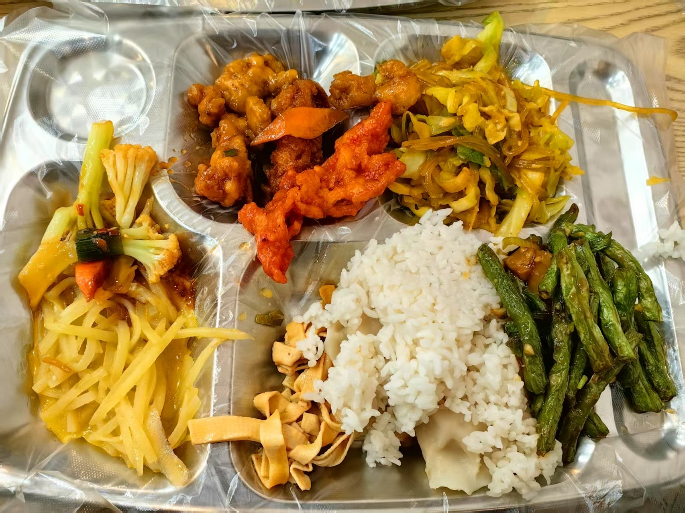
十五元吃到饱的盒饭
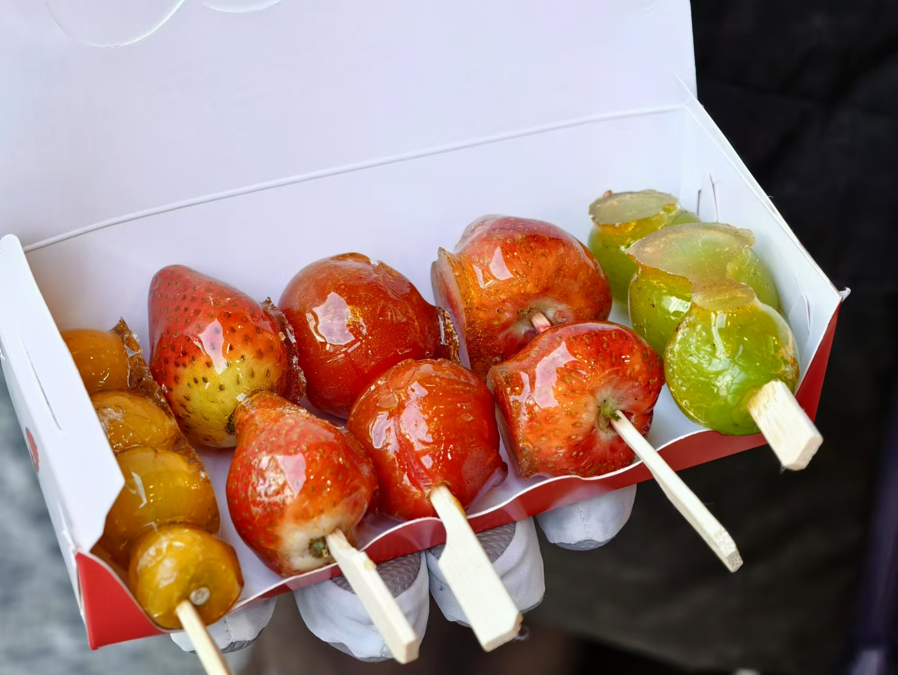
冰糖葫芦
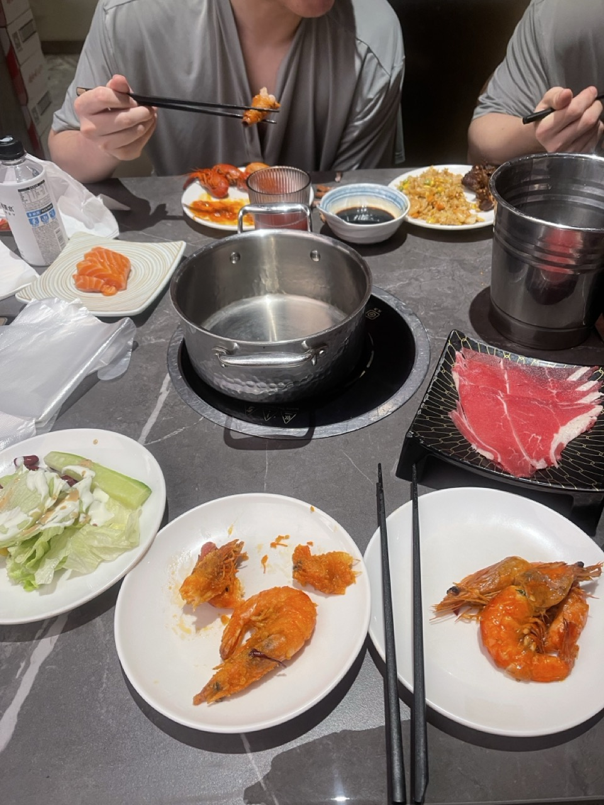
海鲜自助餐
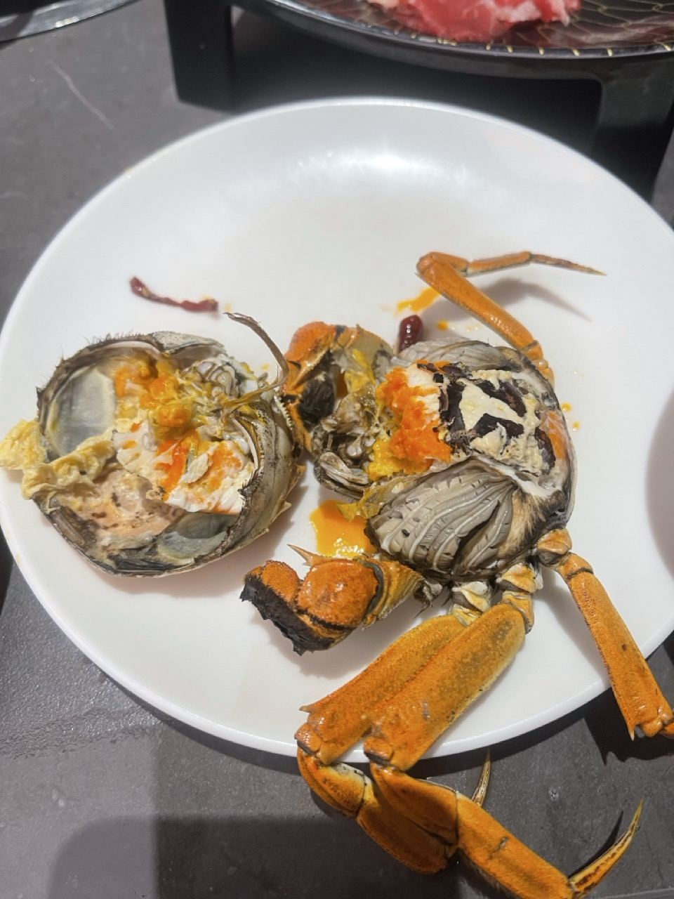
母蟹蟹黄
- 早饭：早饭其实也是吃了的，只是忘记拍照。吃的是东北烧卖，因为没图，现在都快忘记了它入口的味道。只记得它和东北的水饺其实差不太多，皮都是薄薄的，主要是吃里面的佐料。点的羊杂汤，味道平淡如水，定是一点盐都没加，且是特意为之。不过食材也算新鲜，只是每盘食量都很大，即使算得上能吃的我们，最后也还得剩下1/3的汤，和2个烧卖 。
- 中饭：早饭吃得特别丰盛了，中饭也就随便吃吃啦。只是在吃这顿中饭前，我们有幸品尝了「此次旅途中最好吃的」冰糖葫芦。它们各个小巧可爱，在晶莹剔透的冰糖下散发着诱人的光芒。15元5只，任我们挑选，底料是各种各样的水果，其中草莓是我的最爱。坚硬的冰糖外壳下，里面是会咬出汁的草莓。加上适宜的冷冻效果，软和硬的口感配合得恰到好处，得到了我们三人一致的最高认可 。
后续我们走进了一家东北盒饭店，15元的自助，任你吃到饱。小店的经营形式颇像是学校的食堂，每个菜都用大的铁碗装，人们排队取餐，取出适宜的量放到自己的盘子里。即使是旅途中，我也有保持食量的节制，我只拿了少量我爱吃的，最后只剩下少许米饭。图里的应该是tf的那份 。
- 晚饭：晚饭是在洗浴中心吃的。吃之前，我们排了将近2个小时的队，还好有农药陪伴，时间也就自然而然地过去了（可是，我何时变成了这样的人）。晚饭是海鲜自助，里面的人们都是刚从五楼的洗浴中心出来的，男士身着灰色的浴衣，女士则是粉色的 。
每次吃自助，我总觉得用餐就变了一个性质：仿佛用餐不再是为了最好地满足自己的食欲，而是为了如何最大化地回本，吃上总量价值最多的东西。那琳琅满目、高热量的食品，比如蛋挞、披萨，是绝对不能碰的，那个可抵得上两只螃蟹的热量！炒饭和意大利面，可以吃一些垫垫肚子，可绝对不能当作主食！主食必须是海鲜，虾、田蟹，再是肉类，牛肉、羊肉，只有这些吃的足够多了，人才有资格去碰剩下的，比如甜品之类的玩意。可到了那时，肚子里早已乱七八糟，即使再也吃不下，人们也要强忍着，顶着仿佛不吃就亏了的道理，硬吃下最后一口提拉米苏，或是冰激淋球 。
可悲而又可悲，我总是会想起千寻的电影开头，千寻父母饕餮的样子，最后变成了一只又一只的猪。可现实中，我们不会变成猪，只有后续塞的装不下的厕所 。
沈阳故宫：实在没有可看的东西
回头望去，沈阳故宫并没有给我留下任何印象。若不是有这些有限的照片合集，我定会想不起里面到底有些什么东西。即使有，也不过是些乱七八糟、不值得踱步停留观看的东西 。
或许里面有我们早上没睡醒的原因，可绝大部分要归因于景点本身的乏味。它总是会让我想起互联网上的照片，那些炫目多彩的背后，到底存在着多少实质性的可欣赏价值？是的，那些仿故宫的建筑风格在相机底下，确实散发着些许恢宏的光芒，可走到建筑内部，它又到底给我们陈列了一些什么玩意呢？
那里有AI合成的画像，堂而皇之地挂在墙壁上；那里有人们需要久久排队才能得到一瞥的、灰不溜秋的龙椅；还有不知道应该摆设些什么，硬拿主题无关的画作滥竽充数的展览厅；
属实是坑人钱财的玩意了 。
东北初次洗浴：人瘦了，钱包也瘦了
打开大众点评，这家店的人气和价格均处在前列，其中最吸引游客的，是它丰富的海鲜自助。作为外地人的我们，在鱼龙混杂的洗浴场所中，相中了这家 。
走进大厅，只见一列很长的队伍横梗在门口和换鞋处。我看了看表，此时才不到下午四点，就已经有这么多人排队进场了，可见这家店确实如网上说的那般人气火爆 。
幸运的是，排队的是女士，而男女分开。男士这边只需等待几个人，我们换好鞋子后，就被带到了五楼，所谓的洗浴层 。
五楼面积很大，更衣柜都排到了八千多号。我们穿梭在更衣柜之间，辗转前行，在找到我们的柜子之前，我已经目睹了好几个不穿衣服的人们。在浴场处，一片白花花的肉体，他们安然地走在地上，毫不介意别人的眼光，喝茶的喝茶，吃水果的吃水果 。
当我脱完衣服，洗完澡走进汤泉，全身被热水包裹时，身体与水的接触变得特别有感觉。我背倚在墙壁上，目光游离在整个大厅中，时不时还会有人近距离地从我面前下水 。
大概泡了不到五分钟，我就被人喊去搓澡了，原来同行的朋友想叫师傅一起搓，然后吃晚饭去了 。
我一丝不挂地走着，慢慢爬上楼梯，来到搓澡间。房间外也摆放着一些床铺，上面躺着裸体的男性，搓澡师傅穿着短衣和短裤，手拿着搓澡巾，对他们“上下其手”。而我走进的，是和tf一起的二人间 。
我摘掉眼镜，先是正面的躺在床上，心里对着期待已久的搓澡抱有一丝紧张。朋友的搓澡师傅一看是个内行人，用话术套牢了我的朋友，让他轻松多花了80块钱进行了头部按摩，后续还不忍拒绝其推荐的319套餐。我只中了前面的计，多花了将近100，可我后来还是感到后悔 。
我的搓澡师傅是位中年男子，话不是很多，仿佛是一旁师傅的小弟。先是头部按摩，其手法我分不清和家里洗脚店的随意按摩有何区别，只有在涂上了些乳液后，才体会到了一丝清凉 。
下面便是正式的搓澡。师傅好心地把一条热毛巾贴在了我的眼睛上，好让我闭眼享受过程。我耐心等待着，先是我的上半部身体接收到了精油的温润，后续便是澡巾和肌肤的摩擦，师傅左右来回地使劲。再是两条手臂，其手法在我好心告诉“我来自南方，此前未曾体验过搓澡”之后，便手下留情了。再是腹部，闭眼期间，我总是想象着师傅在我身上的动作 。
精油慢慢下滑，师傅撩起了我的双腿，用手轻轻推我的阴囊，将那温暖而又柔软的液体喷射到了肛门上方。师傅搓完腿后，便让我翻身，该搓后背了。后背也是横一刀、竖一刀地搓着，待我重新睁开眼，只看着黑色的污渍黏在了透明的床单上。原来，搓澡的对象就是这些玩意 。
搓澡完毕后，我又回到了泡汤区。快泡结束时，我那不敢被人看到裸体的害羞心理，已经不见了踪影。既然别人都能坦然对待，我又有何害怕的呢？
第三天
2月8日：转去长春
一日三餐：早市、地锅鸡和麻辣烫
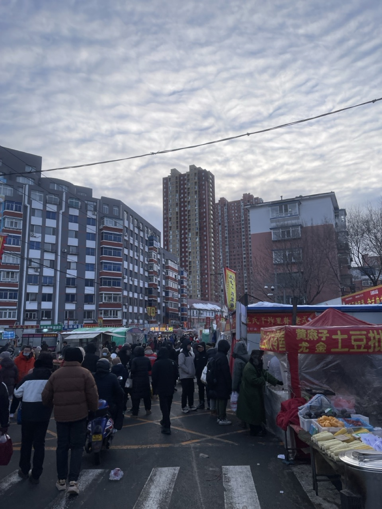
沈阳的早市
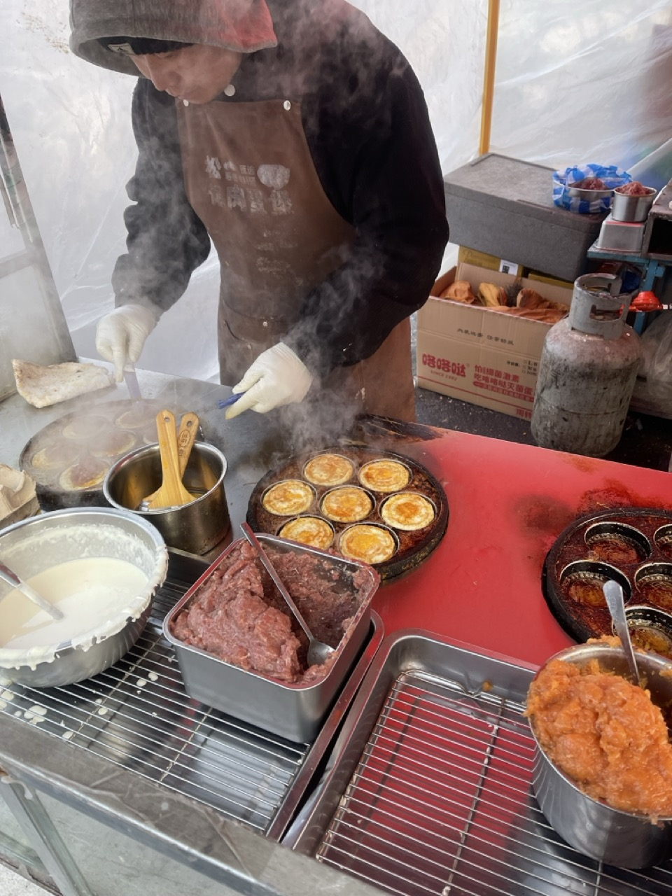
鸡蛋汉堡
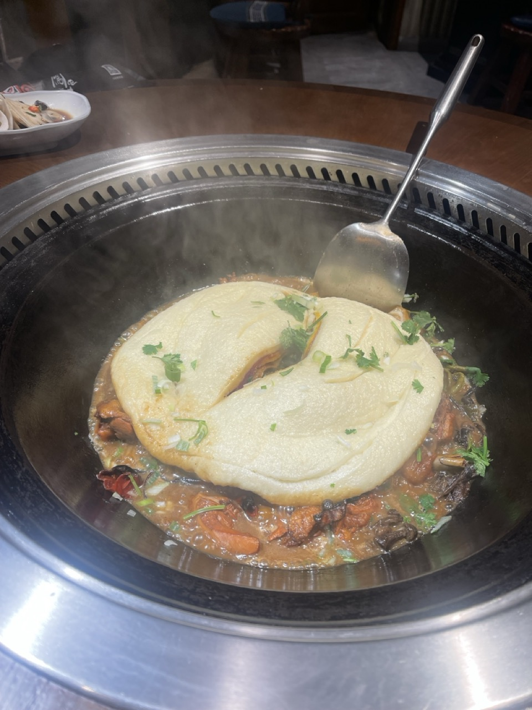
地锅鸡
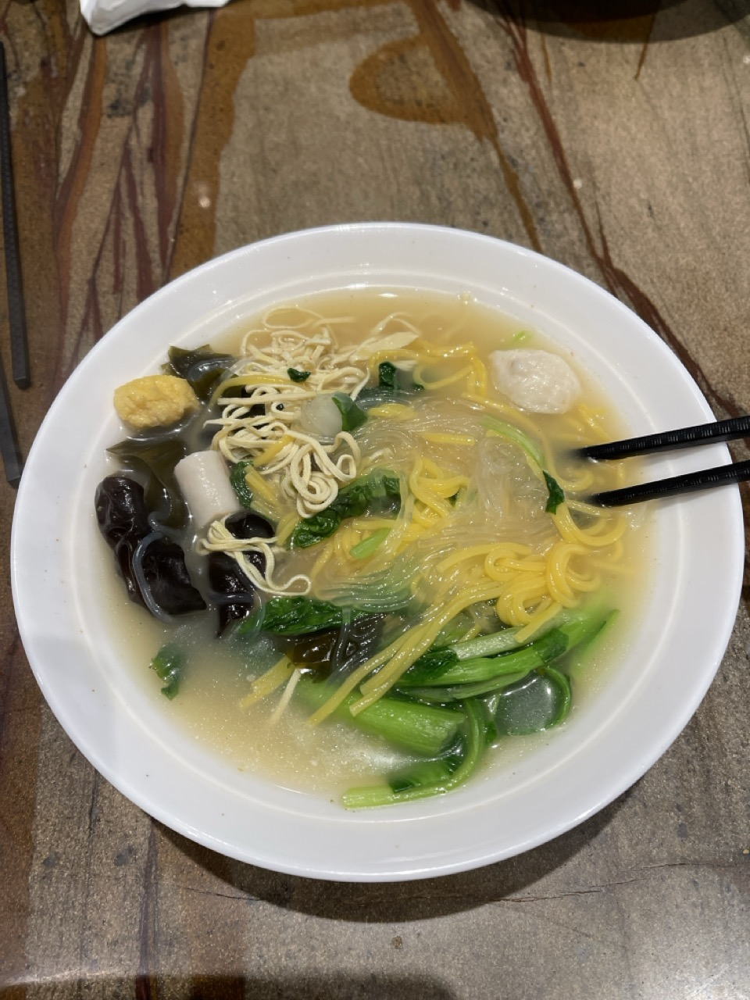
麻辣烫
- 早饭：大概是因为有了前晚熬夜到三点的教训，昨晚1点不到，tf和老头就已经疲惫地躺在了床上。我睡前记了账，把整理好的图片贴在了游记上。期间我就看到tf渐渐眯上了他看手机的双眼，不知何时已经沉沉睡去了。是啊，也到点了，该睡了，明天还要八点起来去早市呢 。
虽听说东北的早市不到凌晨五六点就已开启，但我们八点多到达时依旧热闹。他们摆摊的形式，颇向一个露天的菜市场，又或是商业街的夜市：只见每个店铺里坐着中年的大叔大妈们，卖着当地人常吃的早饭，里面有鸡蛋汉堡、狗不理包子、热乎的瓶装牛奶、说是俄式的红肠。我的要求不高，在保护肠胃的前提下，选择了一杯豆浆和一个鸡蛋汉堡。于家里相比，汉堡里有个完整的荷包蛋，以及只要4元的价格，就已胜出许多了 。
- 中饭：中饭是我们抵达长春，到民宿安放完行李后，才去附近有名的「铁锅炖地锅鸡」店里吃的。12点进的店，却在14点才出来，放在平时饕餮吃饭的tf和老头身上，那是不可想象的。原因也很简单，它炖就得炖上个一个小时左右，能够tf和老头玩两把战旗了 。
可实际吃起来，却并没有想象中的好吃，只能用常规来形容了：鸡肉虽炖了很久，肉质还保持不烂，只是汤汁的味道却没有炖进肉里，吃起来就跟红烧鸡没有什么两样。唯一的优点，是锅里的食量很足，各自拥有1.5个人食量的老头和tf吃撑了肚子，也还是难以解决锅上一团团的白色面饼 。
- 晚饭：晚饭是在景区里吃的，18块钱一晚的麻辣烫，里面没有一丝荤的，素的我还以为是在寺庙里吃素餐呢。不过起码它没有用离谱的价格坑人，而且素食对近来饮食混乱的我来说，也算是小清新的调剂了。我连芝麻酱都没加，汤淡如水，正如我吃它时的心 。
冰雪新天地：被砸的痛苦
吃完中饭，我们打车到长春的冰雪新天地。据网上所说，这里是哈尔滨「冰雪大世界」的翻版，里面一样有冰雕，有为游客设立的雪上娱乐项目。可去完之后，我对其的总体评价不过尔尔。特别是在和室友正版的「冰雪大世界」比较了之后，觉得其更拉了 。
景区里面主要分成两个部分，一个是所谓的景观，是够游人驻足观看的，其中以冰雕为主。规模大些的属各地景点的雕刻，其中有北京的天坛，杭州的雷峰塔，小一些的，则有各类生肖、西方女人的头像和照片里的高达。夜晚呢，建筑还会发出五颜六色的光，只是这配色，让我想起东北大妈身上的衣服，有些土的掉渣 。
另一部分是游乐设施，以坐在圈上的滑梯为主，刺激程度随着滑的距离而增大，只是那刺激只存在于开头部分，待适应了之后，再刺激的项目在我眼中看来，也不过是某些重复，完全不如滑雪来的自由度高和挑战性。但正如中国老话，「来都来了」，那么也就每个都体验一番咯 。
我们先去排队最多的项目：1314米滑道。顾名思义，它以长度著称，我们排了将近四十分钟才到达山坡的顶端。那里，划圈在雪道上排排放，彼此紧挨着，且中间没有任何连接。连接全靠前后人们的脚支撑着，由于惯性，上下紧挨的划圈速度相差不会很大。在没有做好十足的心里准备，我们就被人推下了滑道，在向下俯冲的加速度中，划圈在狭窄的道里和墙壁左右相撞，其激烈程度，让我想起了过山车。我抱紧了tf伸出来的脚，在冲刺中感受着冷风如刺般划过脸颊，冷得我都喊不出话。不过，刺激只是暂时的，坡道一会儿就缓了下来，适应速度后，中间就是滑行，伴随着轻度的碰撞，直到出口为止 。
只是，我怎么都想不到的是，在出口我竟会被工作人员打碎了眼镜，眼角上裂出了道鲜血。那时我正低头检查圈里有无掉落的东西，一个巨大的东西直接撞在了我的脸上，下一刻，左眼的视线变得异常模糊，等我意识到时，才发现左边的眼镜已经不翼而飞了。原来，那工作人员连一眼都没瞧过我，就直接将坐在我前面的划圈以180度的大转弯，使劲全力地向远方丢去。遭受如此打击，可我却表现得跟个没事人一样。只是冷静地告诉对方，我眼镜架碎了，镜片掉了。后面是老头在雪地里找到了它，由tf带我去了医务室。事后想起，我总觉得对方应该付点责任吧，至少赔我一些后面更换镜架的钱也好，后续我在尔滨花了三百换了个新的 。
据tf说，医务室里的护士小姐姐长得挺漂亮的，果然他这人到哪里都只会用色眯眯的眼光看别人。只可惜我带不了眼镜，不然我也可以验证一下他话的真实性。零下的温度让我丧失了痛觉，本应引起剧烈疼痛的碘酒擦在伤口上，仿佛如清水擦拭。擦完后，找了个创口贴贴上，我也就成了景区里唯一的病号了。看完治疗全过程的tf事后评价道，护士姐姐虽长的好看，可简单护理的技术恐怕连他都不如，找个绷带找的翻箱倒柜，撕也撕不利索，一会儿长的粘住头发，一会儿短的涵盖不了伤口 。
完事后的我，像个没事人一般，继续再战。不过在后续的时间里，景区里也没有别的好玩项目，我们就溜了个小滑梯，在某些打卡点前拍了些照片留作纪念，就赶着去下一个行程：夜晚的滑雪 。
夜滑天定山：体会到滑雪的快乐
来之前，其实我对这样的行程安排曾有过质疑：下午玩了游乐园之后，晚上还会有体力去滑雪吗？可实际体验了之后才知道，下午的雪上项目称不上一点强度，不过是洒洒水花罢了 。
换完装备，第一次走进夜场的滑雪场。如果白天在自然光照耀下的雪能被称得上漂亮得洁白无瑕，那么晚上在人造灯下的雪则显得黑不溜秋了。雪场上的人很少，我们三人先去初级道巩固上次去安吉滑雪留下来的技巧。这里的初级与安吉那儿的中级相类似，沿着一道平缓的坡道下滑，且在少了行人的情况下，雪道变得畅通无阻，难度更是大大降低了 。
这才是我第二次的滑雪。可当我双脚在坡顶穿上双板后，心里却有了一股很强的熟悉感：是的，就是这样的感觉，这儿的滑雪鞋相比上次更加舒适；凭着身体的感觉，我依旧轻松控制滑坡速度和方向的转变。从坡顶下滑算起，不到一分钟我就能抵达坡底，往往排队等魔毯占据了更多的时间 。
期间还没有忘记通知实验室其中一位的学长，他在学年总结时，特地强调了他对滑雪的热爱和其技术的高超 。
大概在初级道花了四五趟后，它对我来说就丧失了所有的挑战性。站在底下，远方那看不到边的中级道，渐渐吸引了我的目光。来都来了，今晚的状态又是如此良好，何不乘个空中的缆车，试它一回？
后续便上了缆车，抵达了中级道的起点，脚下是长达700m的雪道，我此前还真没有一次性滑那么远过。缆车很快，就是坐在上面的东北风，吃得我好饱，吹得我好冷 。
眼前道上的人比初级道还少，tf和老头此时还在初级道试水。用雪仗向后一推，挑战东北中级道的目标就在我的眼前。向下倾斜的力，就好像小时候学自行车时在背后推的父母，它轻柔和带给我力量。我随意地控制速度，快了就多刹一些，慢了就平行双脚；我自如地变换方向，在洁白的雪上画着大大的S弯，甚至不忍一次性滑到底。我延迟着享受，就仿佛舒适的性爱一样 。
我来了又走，走了又回，不知疲倦地滑了一趟又一趟。记得在缆车上也遇到过各式各样的人，其中有和妈妈一起来的初中生，他开场白的方式是问我几几年的；有成对来的高中生，从场内播放的流行歌曲APT聊到生物书里DNA的全称。他们在下了缆车后，和白色融为一片，消失了踪影 。
到结束时，我一共滑了5趟，要是算上初级道，总长度得有4km。这可也算得上小有成就，让我第一次感受到滑雪的乐趣：我只需望着眼前的雪，享受滑行的自由，除了耳边吹过的风有些刺骨外，可控的自由能带来多少乐趣 。
第四天
2月9日：转战长白山
一日三餐
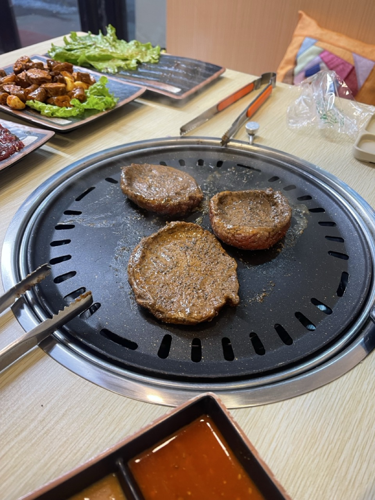
本地韩式烧烤
早饭和午饭的图，已经永远丢失了。但它们对今日的行程来说，也确实不重要。上午在民宿，点了当地的外卖，我不过吃了一个杂粮煎饼和一杯豆浆，其余tf和老头也没有吃什么特别的食物，因此不记录也罢。就是这杂粮煎饼里整整塞了两根油条，吃得我乃措手不及，太TM难吃了；中饭呢，因为下午逛景点时间上的紧迫，在超市随便买了些东西，在车上草草解决了。我吃了点酥饼和一杯咖啡 。
- 晚饭：下午用了不到两个半小时的时间逛完了老里克湖，又花了一个多小时哭哭等待司机，到晚饭这个点，我们早已累了。来的这家店是由本地的司机推荐的，他人为了弥补先前迟到的过错，还特地将我们直接送至目的地。与室外的寒夜相比，室内温暖上许多，而且今天可没有吃上一顿正经的饭呢 。
这是我们唯一一次在东北于炕上吃饭：它们就有如电热毯，可以在电源上调节设定的温度，设定好后，就只需等待屁股下的位置逐渐加热，好不热乎。这家店由整个家庭经营，招待由母亲解决，上菜的盘子有时会让小孩来拿，爷爷辈负责看门，看不见的爸爸应该就掌管后厨了吧 。
因为饿，我们点了好几盘的肉。其中最好吃的，就属烤肥肠了吧。外焦里嫩，多油多汁，咬下去又带着点劲道，实在是找不出别的肉能身兼这么多的优点。照片里的牛排则很一般，坚硬和过实的口感，即使肉质新鲜，也算不上好吃；其余的五花肉、牛肉等等，在店家自己的调味下，虽有些重口，但依旧好吃 。
重要的是，这顿饭让我们恢复了体力和生机。这不，饭后tf和老头已经商量着要去街上按摩，来抚慰下午的徒步行走了。我没有跟去，只想好好洗个澡，但无奈找不到适合的店，便回民宿休息了 。
速通老里克湖
此趟来长白山之前，我就已经听我刚从东北回来的室友说过，那里的“老里克湖”就有如仙境，作为一个南方人，他第一次见到这么多的雪。他给我展示了他拍下的照片，虽然其中80%都是他女朋友的人像，不过冰天雪地下，确实呈现了与南方截然不同的地貌和风景 。
从我们刚下长白山站开始，整趟当地的旅程都由着一位导游驱使，那便是我们的司机。司机是个三十多的当地人，操着东北的音，开着最狂野的车，可即使这样，要开上老里克湖，也得花上一个多小时。我看着手机上自己所标识的圆点，离我们下方不远处，就是朝鲜这个国家，我至今仍不明白，国家与国家的分界线到底是如何划定的 。
老头负责了此次行程的订票和车程。因此他坐在了前座，和这位司机交流着。只记得司机他在车上说了许多，经常一边说着，一边在两道有积雪的车道上随意超车，空无一人时会把速度拉满，仿佛在炫耀他土生土长，在这里开了好几年的开车实力。我有过好几次的隐隐担心，但没有袒露于言语 。
我们原定计划是要把行李先放民宿，再前去老里克湖，可碍于时间关系，当地不到五点钟天就要黑了，那时不管是景区里的雪道，还是下山的路，都因看不见而变得困难重重。于是，我们只能把行李暂存在司机的车上，这为后续我们的担忧埋下了隐患 。
后来想想，将价值3w多的行李，交给一位莫不相识的司机保管，我们是得有多大的心哪。可我们也为此付出了代价，从刚下车开始，我和tf就想到了一个点上，在这个下山就要花一个小时的、偏僻的地方，如果司机不遵守诺言，他完全可以弃我们于不顾，然后拎着行李，将里面的东西全数变卖，捞得一票大的逃离。tf还打趣地说刚好可以跑到朝鲜去 。
不过，虽有如此担忧，在司机信誓旦旦地帮我们买好了景区的门票，甩下一句“祝你们玩得愉快”后开车离去，我们也只能看着他走，将一份信任全数放在了他的身上 。
接下来，我们就又开启了「特种兵」模式：先坐了雪地摩托到了中途的停靠站，再全靠一双脚，走了2km到达终点 - 湖的中心，再快速走回驿站，在日落前跟在拉车的马后面，回到起点。而这一切，包括其中沿途拍照所花的时间，也不过是两个半小时 。
这天天气晴朗，蓝蓝的天空，雪白的枝头，木制的小屋，偶尔跑动的小狗，加上周围一切静谧的环境，这里完全符合我对北方安逸生活的幻想。我们穿梭在树林之间，雪道上除了红旗作为标识外，没有指示任何方向。若是走到雪道两旁，那里的积雪能有人膝盖的厚度，完全可以将整个人埋藏在其下 。
我们便行走在这满世界的雪上，直到终点。终点是个颇为空旷的大湖，湖面早已结了冰，上面摆着摩托的游乐项目。没了树的遮挡，这里的风显得异常得凶猛，我的手不过在外露了不到一分钟，再躲进手套里时，已经痛苦到接近麻木。我们同样在这拍了些照片，便准备回去。只是恰好在这时，我们遇到了一位独自旅行的姑娘。她距离我们遥远，我们只能看到她形单影只地向前走去，她穿着厚厚的雪地袜，身上背着书包。我们仨打趣地让tf上前搭讪，但迟迟没有行动。后续，我们看完她将书包放置在空地上，手机摆着仰角的摄影方向，她在镜头前蹦蹦跳跳的、活泼的样子后，便心满意足地离去了 。
可接下来迎接我们的，却是我此前未曾料到的、长达一个多小时的苦苦等待。我们按约定在五点前回到了起点，老头拨通了司机的电话，司机只说他因为堵车，要过会儿才能来接我们。我们只能坐在长椅上休息，忍受着10米外无限循环的、吵闹的喇叭声，同时因为看了查找的定位后而提心吊胆。正是担心电脑和平板之类的设备被转手甩卖，我们才看起了「查找」上它们的实时位置：之间它们在离我们50km外的地方，且随着时间的推移，离我们越来越远 。
在司机未到前，我心里都已经做好了报警的准备，同时安慰自己，只要人还在，那就可以寻求警察的帮助；如果在我们上车后，才发现东西不见，司机露出了真面目后，那后果是真不敢设想。那时，我早就想好给出自己所有的钱财，留一条狗命了。后来司机真的来了，上了车后行李果真都不见了，他说他放在了别的地方，现在就带我们过去。听完我都不顾下午旅程的疲劳，一边警觉地观察车外的环境，一边打开手机，打开了录音功能，心想说不定未来还可以用上 。
幸运的是，它用不上了。司机是个好人，行李放在了其岳父的家里，开车时不断接到他小孩和老婆的来电，电话那头问着这个当爸的，能不能晚上早点回去和她们一起吃饭 。
嗨，也真是虚惊一场 。
第五天
2月10日：爬长白山
早起去雾凇漂流
记得昨夜睡在炕上，因为担心夜晚太热，睡前把加热功能关掉了，于是炕就成了一个单纯的硬床，一点也不如软床睡的舒服 。
早上好歹也起了早，想在下午离开前，最后一睹长白山景区的风景。整理好行李，搭上昨天相同司机的专车，我们前去了上午的目的地：雾凇漂流。也正是这趟行程，让我明白了，到底什么才是雾凇 。
检完票，我们三人同乘于一条艇上，眼前是向下倾斜的水道，两边是林立的松树，其树枝向中央倾斜，成拱门状，穿梭其间，如过水帘洞般。碧蓝的天，金光闪耀的太阳，配上冰雪融化后的雾气，好似来到了新的秘境 。
可我们却如参加竞速赛跑一样，作为掌舵者的老头，用划桨催着小艇前进。一路上，我们越过了一条又一条的游艇，艇上的人们不无拿着手机或照相机，对着眼前的景和人拍照。见此情此景，我突然想到了日本的电影《小森林》，同样是接受大自然的馈赠。随后，我放歌于船上，一边轻哼电影中轻快的曲调，一边注视着周围的景 。
后来小艇游过了水道，来到开阔的湖面，我得以看见雾凇的全景。一样，这里又是雪的画作。小小的雪凝结在树杈上，像是给它们画上了雪白的眉毛。树杈们清一色地向外伸张，有机智的人士就挽着树枝，来抵抗向下水流的力量。湖面如镜，水中倒立着蓝天和被雪装饰的树 。
事后回想起来，这儿大抵是整个旅程中最美丽的地方 。
速通长白山
逛完雾凇，下一站便是长白山。去之前，自诩幸运星的我们，认为这儿的天池一定会向我们开放。可即使是晴朗的蓝天，在我们看不见的山顶上，依旧下着大雪。天池怕是无望了 。
我仍旧记得初次见到雪山时的震撼。果然山的恢弘气势，不是渺小之物所能够比拟的。它们高我们如此之多，那雪白的山巅离我们又是如此遥远，即使地球上已有那么多的地方被人类征服，它也不忘告诉我们，总会存在人们去不了的地方，那时我们就必须要保持对自然的敬畏之心 。
不光是两侧高耸的山峰，这和北方其他地方一样，被雪覆盖着，而且覆盖的程度有过之无不及。身处两千多米的海拔之上，温度来到了零下负二十七，山谷里吹的风比此前任何地方都刺骨和寒冷 。
我们就在这样的环境下，开始了爬山之旅。眼前的游客众多，且来回走的是同一条小道，拥挤不堪下我们放缓了速度。可我们还是花了不到两个小时的时间，走完了全程。后续的景色和开头是相类似的，我们在山的注视下，欣赏雪蒸发后残留在空中的雾气，也看了山上活火山留下的条条温泉 。
走完这个大景观后，剩下的两个小景观，再不到半个小时内，也就走遍了 。
体验吉林本地人搓澡
吃完晚饭，想必是感受到了旅途的疲劳，tf和老头在吉林的游玩兴致并不是很高。毕竟吉林只是作为一个短途的停靠站，明天一早我们就要包车前往北大湖滑雪，再也没有机会去见识夜晚市中心的面貌。而我对上次的高昂洗浴有些耿耿于怀，凭什么光靠一个自助、里面装修得富丽堂皇些的澡堂，就能够收我500块的大洋？这些网红店，正如后来出租车师傅说的，就是专门接待我们这些人傻钱多的外地人 。
可东北本地人去的澡堂，其真正的模样，却是我不曾目睹过的，我想去体验一番。在点评上搜了一家开了十几年、本地人常去的店，其洗浴加上搓澡也就55块钱。正好趁着今夜的疲惫，外加上最近好几天已没有洗过舒服的澡（住宿的浴室都不怎么样），我独自前往。因为tf和老头在有了上次的搓澡经历后，对东北的搓澡文化并不感冒。相反，他们倒是对有异性服务的洗脚一直抱有很高的期待。可是，这在我看来，和送钱没有本质的区别。不过是按摩的人性别一换，男性却要为此多花上两百的价钱，而且手法上必是比不过老师傅来的劲道。不过道理我也都懂，那就是性激素的额外价钱 。
这倒是给了我一次独自旅行的好机会。当我一个人行走在吉林夜晚的街道上，虽然这里不到晚上八点，路上已经人迹罕见，但看着眼前这个完全陌生的城市，两边的商店不到半数还开着门面，我突然心生一股如获新生的感觉。想必旅行总是这样，当一个人来到离家很远的地方，这里的人们没有一个认识我，他们不知道我的过去和将来，我只要在意我的当下就好 。
在前往澡堂的路上，我在一家便利店买了要用的毛巾和搓澡巾，听说本地人去都会自带这些东西。购物时，被老板娘一眼认出了我南方人的身份，并且这个身份使得她用更热情的态度接待我。我遵循她的意见，选下了对自己更加友好的澡巾。在微笑告别前，我还特地问她，她到底是如何轻易地分辨南方和北方人呢？ 她说，北方的男人们总是耸着肩，从外面走进室内时，人总是戴着帽子缩在里头。而像我这般，穿着围巾、戴着帽子、后面还背着个学生包的模样，肯定就不是北方人啦 。
还走过一个胡同，差点被里面的价格惊掉了下巴。那里瓶装的牛奶，10元5瓶，简直跟不要钱似的。可傻傻的我，即使听到了一旁也在购物的人的询问，“这些牛奶啥时候过期啊？” 她拿起一瓶而又放下，“感觉买来铁定喝不掉啊。” 也还是立马拿出手机，付完了款。后续拿出牛奶一看，好家伙，保质期只有19天，明天就要过期了。果然便宜也不能乱贪哪 。
走过胡同，就来到了今晚的目的地。这条街上，只有这家店还在营业，可见吉林这边居民们的作息习惯了。在门口换了鞋，走进室内，和上次一样，里面的人们也是没有穿着衣服走来走去。不同的是，来这里的绝大多数都是些中年人。进浴室前，还出了点小的插曲：我把号码牌看反了，本是051的号码，被我看成了150，也是神奇了。当时我还裸着去找师傅帮忙，不过有了上次的经验后，我似乎对裸体不再过敏了 。
走进大澡堂，将近9点的这个时刻，里面只有10-15个人。右边靠墙壁的一排是给人们淋浴用的，没有隔间，人就站在那，光天化日下开始洗澡。洗完后，这里有三个泡池可供选择，温水池、冷水池和热水池。洗的过程中，也见到三四个年轻人一同前来，听他们交流的语气，一看就是本地人。他们在喷头下快速地冲了一下，便跳进了温水池，围成一圈，边泡边交谈生活上的趣事。我洗澡可得洗得仔细些，然后走进周围没有人的池子中，缓缓躺下。温水池温度还差了一些，刚好作为我之后去热水池的准备 。
与泡池相对的，是搓澡区域。那里共摆着六张床，对应着六个师傅。同样没有隔间，全部人都坦诚相待。搓澡师傅还挺忙活的，又是搓澡，又是拔罐的。我看看四周，离我较近的，只有一个戴眼镜的小男孩，推测其年龄，不过小学生的模样；挨在他身旁、身在热水池中的一看就是他的父亲。当我温水池泡够了后，我起身前往温度更高的池 。
不愧是热水池，肯定有45度左右了。刚接触时，皮肤感到热的激发，稍微忍耐后，才把整个身体沉下去。过量的热气逼着我体内血液的流动，我抬手看了看手的经络，那里红白相间，显得气血很好。在这期间，我看了眼前的电视机，上面在播放亚冬会的消息；我见证了父子之间的搓澡和对话，小孩躺在玻璃地上，父亲拿着搓澡巾，一边摩擦小孩的身体，一边跟他说，要是不好好搓干净，回家又要被你妈说了。小孩净显抗拒，大抵是受不了父亲的手劲，由大人负责的话，总要对他们比自己大上很多的力气感到恐惧。他扭动着身体，一边带着些抱怨的口气，说着行啦行啦，可还是被父亲接着搓下去。这场景的温馨大抵也只有在当地才体会的到吧 。
我泡了不到五分钟，就已头晕得不行。我赶忙又换了个池，让自己稍事冷静下。池的中间，躺着位大叔，定是在享受泡完澡后的闲适。中年人的阴茎总是黑黑的，耷拉着阴囊 。
在来回泡了将近半个小时，自觉身体表面已慢慢孵开一些污渍，我起身前往搓澡间。在那里，我遇到了刚才为小孩搓澡的父亲。在我简短表达来意之后，其中一位空闲的师傅领着我，带去了附近的一位空床上。我卸下手表，把准备好的澡巾递给他，他倒微笑地回答，定是忖度到我是个南方人，“你这澡巾哪来的？” “来之前我特地看了下评论，在附近的商店买好带过来的。” 以此作为对话的开始，整个搓澡的期间，我和师傅的对话便再也没有停过了 。
相比上次，这次的搓澡显得更加仔细。我也是躬身力行之后，才明白所谓“四面搓”和“两面搓”的区别。原来搓澡的两面是指前面和后面，而四面还会包括左右两面。师傅还很用心地搓了两遍，一边搓，一边向我这个游客推荐，我应该去哪里玩比较好。只是空旷的环境，加上周围中年男子的对话声，让这位师傅的声音飘散掉了，只有只言片语传进了我的耳朵。可即使这样，我依旧感受着对方的热情和真心 。
搓澡快结束时，我才大抵明白搓澡的魅力到底在哪里。搓澡不过是这里的习惯之一，它代表身体的洁净和清洁，也代表此地友好亲切的闲话家常。在一天的疲惫之后，谁又抵得住泡个热水澡，沉浸在身体的享受中呢。我想，日本那也会是如此的吧 。
后续穿上这儿给的浴衣，带了kindle和牛奶前往二楼。那儿的大姨大妈们帮我热好了牛奶，剩余的时间我一边喝暖心的牛奶，一边躲在无人的蒸拿房里，看起了书。我对这样的时光甚是惬意。后来我也遇到了那个小男孩，他碰巧进了和我相同的蒸拿房，那时我拿着手机播放着夜晚舒眠的音乐。他打量了我几下，在房里跑了几圈，后面就被他父母带走了。还见到了光着上身、围坐成一圈的中年大叔们，刚泡完澡的他们心情大好，吃点阿姨们送上来的小菜，喝着夜晚的啤酒，尽情地谈天说地。我想，这也算是当地生活的一部分吧，而我作为一个见证人，一杯热牛奶和一根烤肠，就足够我高兴的了。（PS：这烤肠好难吃，很干，肉吃上去跟泥一样）
第六天
2月11日：北大湖冒险
一日三餐：拉面和乌拉火锅
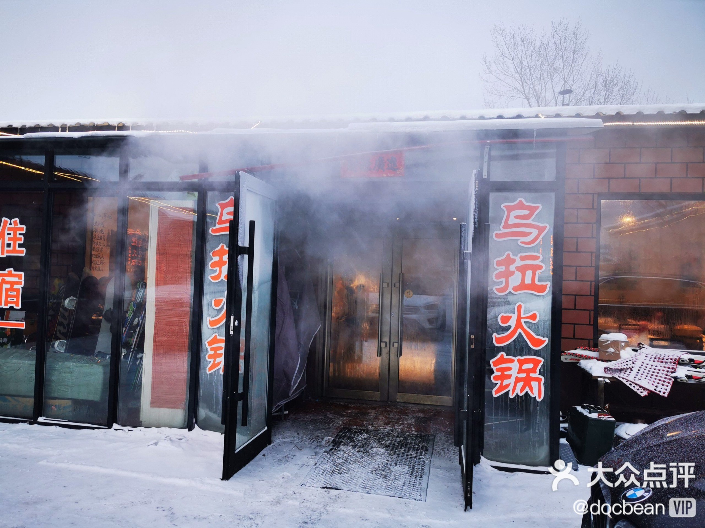
雪场拉面
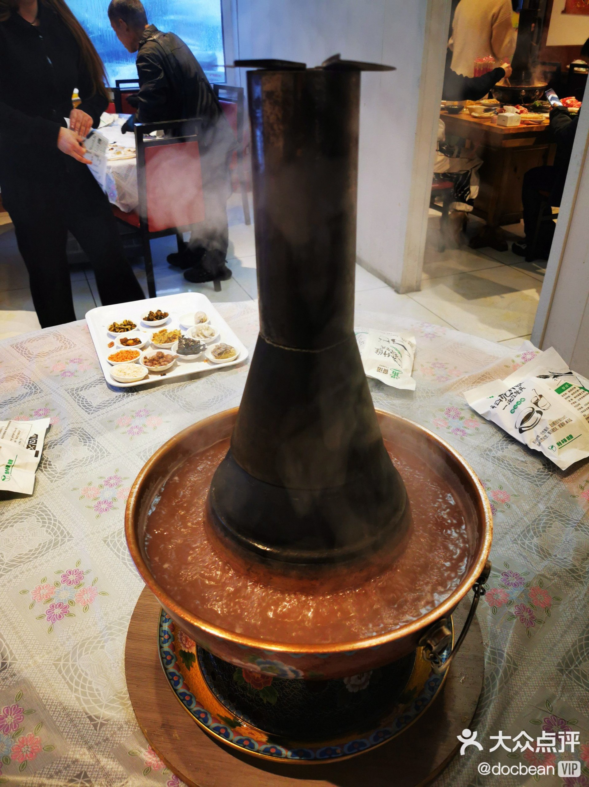
乌拉火锅
今天是东北三人组行程的最后一天，我又该去如何评价这次东北之旅呢？旅程的最后一天，我们连食物的照片都忘记拍下来了 。
- 中饭：上午包车来到北大湖，为了省出下午滑雪的时间，我们中饭就随便找了家拉面店解决，店就在雪具大厅的二楼。人均将近50的面，说是日式风味，可那汤底太过浓厚，一看便加了太多的调料，让人喝不下去；面也就正常的日式拉面，可食，但没有吃的乐趣；我点的不辣的豚骨，豚骨也没有什么特别。总的来说：常规 。
- 晚饭：这是三人一起吃饭的「最后的晚餐」。我在点评上找了家包接送的乌拉火锅店，听此前搓澡的师傅推荐，这是当地特色，一定要尝试一回。而店名里的「乌拉」，我猜想其用语是来自邻近的俄罗斯，但没有进一步的确认 。
刚进门时，店里有一半的座位是空的。室内的暖气如往日一样，模糊了我的视线，等我擦拭完毕，才看清室内的环境和站在我不远处的、年轻的老板娘。她看上去三十多岁的样子，脸有些肥嘟嘟的，微胖，让我联想到了阿黛尔。她说话的语气极其热情，仿佛我们是来自远方的朋友，而她作为东道主，要好好招待我们一番：“你们就是刚才电话里预约五点钟来的三个人吗？”
她一边说着，一边领着我们来到门旁的座位。她拿来店里的菜单，招呼店里另一名年纪稍大的婆婆，负责收拾好我们的外套。当我们问她能否炒一个菜单上没有的蛋炒饭，她笑着回答，“可以啊，就是我炒的不一定好吃哦。” 等去了厨房，她重又走回来，说道，“不好意思，里面没有冷饭了。”
吃饭途中，她不忘好心提醒我们，可以退掉点多了的主食；她免费送了我们一盘当地的东北皮和橘子罐头；还拎来了一袋水果，里面有三个冻梨和柿子，后续被tf和老头称赞美味多汁；她调的蘸料，配上五花肉有着无比的滋味。与这顿饭相比，她身上的光芒则闪耀得多。她不同于海底捞里服务人员如机器人般的程序，她脸上的微笑和整体神态所传达出的真心，却是别的地方难以寻觅到的 。
可有些悲观主义的我看来，不知道这样对待几位陌生人的善心，又会在何时被时间磨平棱角呢？
再说说晚餐的内容，所谓乌拉火锅，只是在清水锅里加了些被晒干的海鲜罢了。婆婆一边往锅里倒底料，一边跟我们解释，说当地以前没有新鲜的海鲜，所以只能吃晒干、能够保存很久的作为替代，后来就这么延续了下来，才有了眼前的这道火锅。虽然婆婆讲解得很是用心，可我后续没有吃出特别的味道，和清水锅没有差别 。
端上来的肉，食材还算新鲜，店里提供的麻酱不如北京来得正宗，整体口味不如老板娘服务态度来的出彩。不过，我们还是吃到撑，在下午精疲力尽的滑雪后，享受到了饱餐一顿的舒适 。
北大湖滑雪：拿命下来的中级道
第一次听说这个地方，是从吉林搓澡工的口里得知的，他当时一得知来自南方的我们准备去北大湖滑雪时，就极力劝导我们，“别去了，那里是专业级别的赛道，很多滑雪比赛都在那里举行，你们过去见到那个坡啊，怕是得两眼一黑，下都下不来了。”
所谓初生牛犊不怕虎，上次在天定山的滑雪让我积累了大量的自信心，那儿的中级道我能随便滑，难道北大湖的我就不能试一下了嘛？可那时的我，连做梦都想不到，北大湖到底给了我留下了怎样的阴影 。
我第一次亲眼见到这儿的滑雪场，是在去酒店的摆渡车上：远远望去，那里是一座高山，上面四通八达的雪道与桦树交叉着，人们看上去像是一个小点，在道上缓缓移动着，山的倾斜就是坡的倾斜 。
但我们去的不是酒店旁的那座山。当我们从雪具大厅出来，眼前是和雪山初次见面时相类似的场景，只是这儿汇聚了相当多的人。由于观察的距离近了许多，我能看清离我不远的初级道上，上面隔三差五地分布着人们 。
和此前的经验一样，我先从初级道入手，等熟练了后，就向中级道挑战。坐着魔毯缓缓上升，我得以看到这里的全景：后方是人们建造的房子，房子后是重重叠叠的山峰，残留的雪只能从连成一片、呈细条状的桦树顶看到；前方是我们要去的雪道，倾斜程度在10-15度之间，可最大的不同点在于，它依傍的是自然的山，组成的是天然的野雪。这儿的雪更加滑腻，阻力更小，使得控速比平日更难了一些 。
除了初次在倾斜的坡道上穿戴设备多花了点时间外，几天前滑雪的柔顺和舒适再次重现，我穿梭于人群之间，眼睛看着我想前去的方向，多花点力气把速度控制好，后续便是一溜到底，稍显不过瘾 。
滑了这么两三次初级道，自信心让我像往日一样前去中级道 。
一样的缆车，底下是不同的风景。坐在我一旁的，是个不到十岁的男孩，他双脚悬空，熟练地在空中调整单板的穿戴方式。我询问了他是否滑过此道，他不以为意地点点头，说他还试过这儿的高级道，并用手指向更远方。他回答的声音本就不大，自从上了空之后，山上的风变得异常强烈地吹着，风将他的话语打散，只留了只言片语到我的耳朵里 。
下了缆车，我来到了山顶。若是往日，我一定二话不说地拿雪仗向后推去。可见了眼前的场景，我却是立马软了双腿，倾坐在了雪地里。只见我在山峰之巅，在有限的视野里，我居然看不到向下的路在哪里！说它是无底的深渊也不为过。背后的风呼呼地在耳边吹着，其力道不再是父母在背后轻柔的推搡，而是东北搓澡师傅的手劲，一下又一下，仿佛实物般捶在我的身上。如果说轻柔的风对应温柔的话语，这儿的风乃化身成了恶魔的狂语，恨不得直把我往地狱里推去 。
我好几次站立后，又再次坐下。脑袋里满是对未知的恐惧，我想象着自己的失控，在这个即使没有来自雪地的推力，光是风就能带我下去的地方，我可还有什么勇气。可身旁的人们，他们却对这一切熟视无睹，只见他们面对这个看不见的前方时，会先选择走个大横弯，往山道垂直的方向滑去 。
启动我的，不是突然心生的勇气，而是无可奈何。“我已没有回头路可走，既然上了山，就是滚，也得滚下去。” 这么想的我，可又哪里知道，我一路真的是滚下去的 。
开头的局势良好，我踩着眼前人们的轨迹，垂直的前进方向让速度降到了最低。于是，我就这样重复着，如果两边的栏杆算作两条平行线，那么我就在平行线里，画着尽可能大的S弯，企图用最慢的速度一路下去。正当我这么自信地想着，人滑到了雪道的正中间，我望着我上方不远处，有个姑娘朝我的方向前进，我眼睁睁地看着我们两的距离缩的越来越近，直到两个雪板相交，几乎垂直地相撞 。
下一刻，我迷糊地从雪地里坐起，看着刚才从手中飞出去的雪仗，以及从脚下脱离的双板静静地躺在雪地上。姑娘撞在了十米开外的地方，穿戴者一身防护的她，再次站起，驻足在原地，声音穿透过呼啸的风，“你没事吧？” 那时，我正跪在地上，用膝盖顶着身体，爬着去取回我的手杖 。
哪管什么狼狈不狼狈，在那一刻，我只觉得活着就好。我突然想起了柯南的剧场版，那一部好像也有跪在雪地、慢慢向上爬的场景。我向她点头致意，而她在留下一句“那我滑走了”之后，转头就不见了踪影 。
我不知作何感想。脑子里只想着先把飞出去的东西都捡回来再说。一小步一小步地挪过去，山上的风又成了阻力。待我好不容易收集完装备，我仍不知所措地想着：这么斜的坡，加上这么大的风，我一个人哪穿得上双板哪 。
可我抬起头，身旁不知何时已经站立住了一个男子。他伸手向我致意，询问我是否需要帮助。我无助地点了点头，起身站立，并按照他的指示，将板子与山垂直的方向放置。我先穿右鞋，可刚穿进去的脚不受控制地向下倾斜。幸运的是，板子抵在他的单板上。在我眼里，此人就像是一座大山般沉稳，给了我不少安心。等左脚也穿戴完毕，他留下了个暖心的微笑，往山下滑去了 。
此乃一劫 。
重又整装待发完毕，我吸取了上次的教训，再也不敢在硕大的雪道上左右穿行。如果此前因滑下来一百多米而积攒了部分信心，此刻也早已消耗完毕。撞完之后的我，像个从来没有滑过雪的人，眼里只剩下左右边的网栏作为我最后的保护。我向右滑去，想在贴近网栏前，再做小幅的方向转变。可那将近四十度的坡，却全力地阻止我，速度怎么刹也刹不下来 。
“boom” 又是一击，只是这次撞的幸好不是活生生的人，而是固定的、坚硬冰冷的网。如果说姑娘柔软的身体是最好的缓冲区，那么与此相比，这次的冲撞就好似在撞墙壁。痛得我眼冒金星，直抱着与栏杆撞个正着的大腿，龟缩在雪地里，动弹不得，简直连起身都要放弃 。
我的玛雅，我再爬一次，再取一次设备，可心里的勇气，在接二连三的撞击后，又能在周围的哪里找回啊？左腿有些使不出力，我离底下还有痛苦的三四百米。要不，就当作一个遭遇了雪难的人，踉跄地抓着栏杆，一步一步地走下去 。
可我还是给了它最后一次机会。因为我看到了前方离我不远的一对母女，母亲在女孩的身后，扶着她在雪地里缓缓滑行。那可要多高超的技术，才能做得如此轻易。我几乎垂直地贴地滑行，一小段一小段地前进，让我想起自己过去曾在心底嘲笑，那龟缩前进、不会单板的tf的身影 。
可在离底下不到一百米的地方，我又撞了一次。那时我切成了往日的滑行，可等我意识到前，左脚早已没了刹车的力气，又一次缩近了和网的亲密距离。只是，撞的不够用力，这次好，包括人在内，都没飞 。
终的，当我在雪道尽头，回头去看这段下来的旅程时，心里只剩下唯一的情绪：滑雪它好可怕 。
后记：我后来才明白我自始至终都是个滑雪的初学者，我采用的一直是犁式（靠弯曲板子来减速），网上的过来人都说，这样的方式是抵抗不了陡坡的。真正的高手都采用平行式，不管何时，板子永远平行前进，连减速都是。可从犁式转成平行式，这样的高阶技巧，对滑雪已经丧失信心的我来说，真的还有机会吗？
极乐汤泡温泉
于游客来说，东北澡堂就分为两类：一类是本地人常去、里面的环境往往朴素、却也提供日常舒适的澡堂，另一类是给游客提供、装修精良、提供更丰富娱乐的现代澡堂。今晚去的极乐汤，显然是属于后者 。
打着日式的风格，进门前，我们就被要求换下鞋子，光着袜子走在类似榻榻米的地板上；领完牌子，走进浴室前，还会被站在门帘前的哦巴桑用日语问候。可惜自己日语水平不高，完全听不懂就是了 。
后续的洗浴过程，和此前去搓澡的毫无区别：先在淋浴间洗净身体，再走进汤泉中，在每个池里泡上个三五分钟。因为要接待游客，池的种类比普通澡堂多了一些，除了常见的热水池，还有牛奶池 - 里面的水呈乳白状，浑浊的颜色望不见汤底；按摩池 - 顾名思义，会有几个小孔，孔里会喷出力道稍强的水，来按摩客人的身体；私人池 - 大小如常见的浴缸，只能容纳一个人；
期间出了个小意外，热水软化了我眼镜上的胶水，等到意识到时，镜片已经掉入汤中，与透明的水融为一体了。还好我用逻辑推理了其可能的区域，并用手悉数排查，最后在水底中摸到了它，立省五百块 。
店里还有个所谓「男女混浴」的地方，但听进去过的tf和老头说，那里只有妈妈桑，见到年轻漂亮的姑娘的可能，想都别想 。
这便是三人旅程的最后一段了。完毕 。
第七天
2月12日：转去哈尔滨
一日三餐：面和俄餐
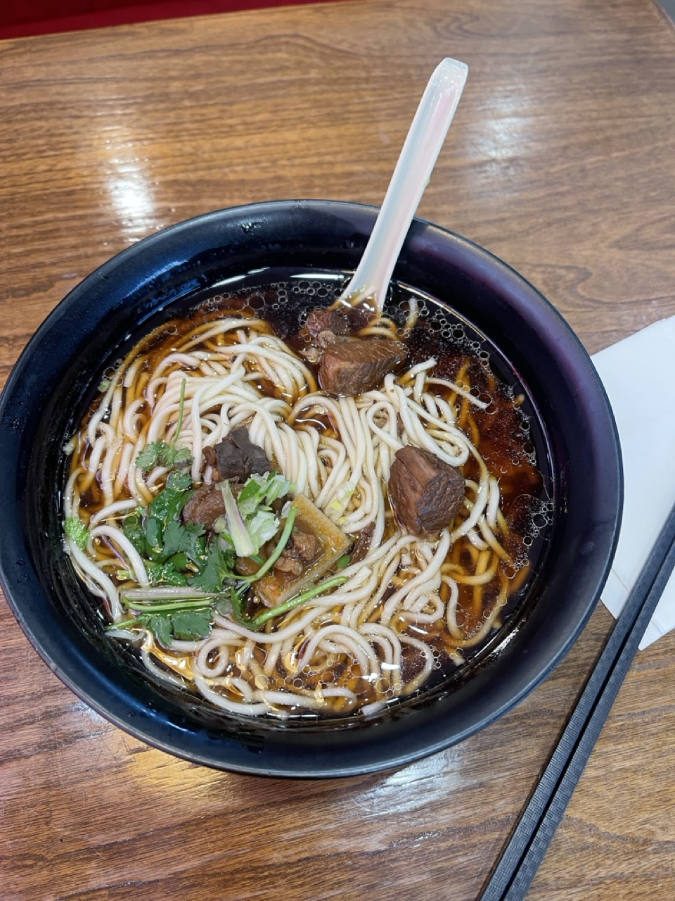
清汤牛肉面
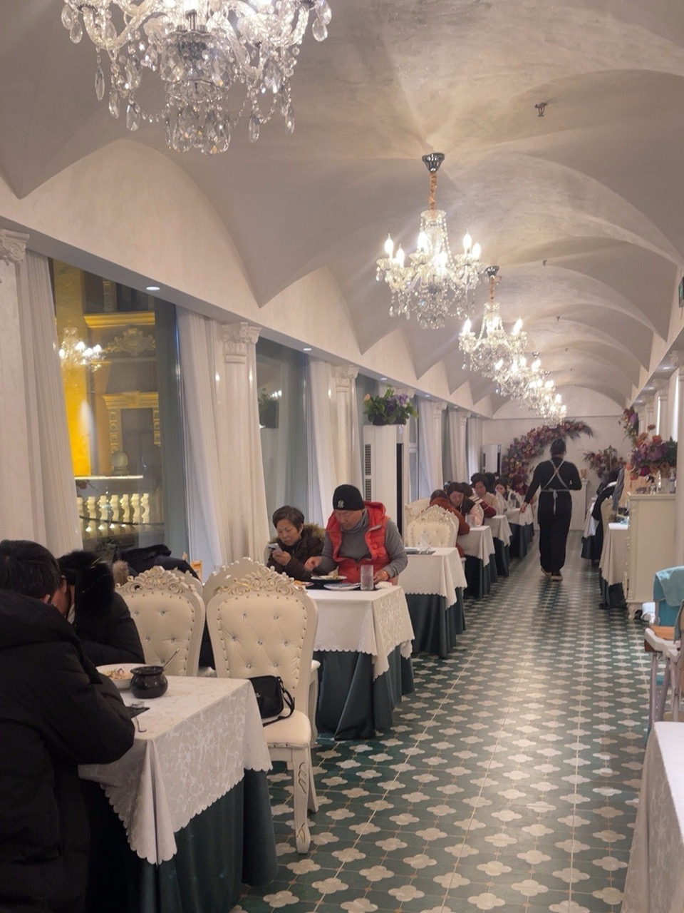
俄式大面包
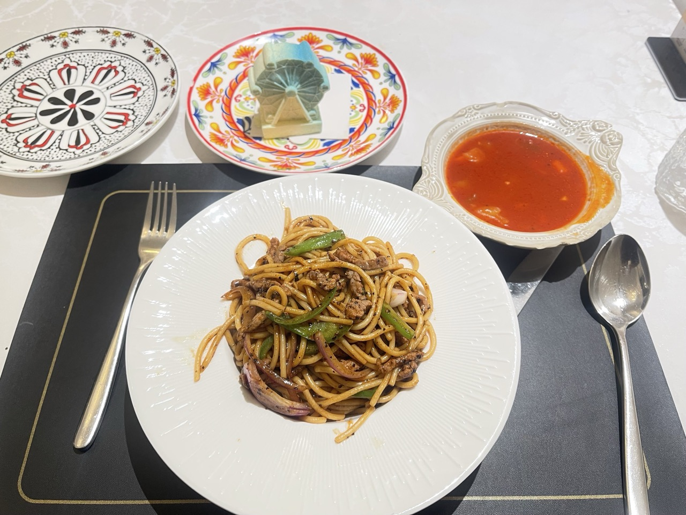
俄式晚餐
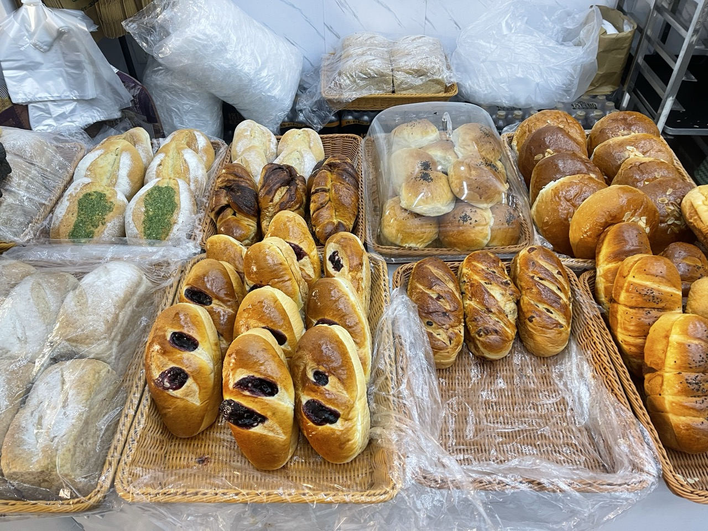
餐后甜点
- 中饭：中饭是在高铁站解决的，一碗清汤牛肉面，配料只有些许的香菜。我的要求不高，只是缓解一下近期混乱不堪的饮食：过去这几天，早中饭要么不吃、要么就吃得很简陋，晚饭往往是一天的重中之重。胃总是在饥饿和极端的饱胀之间循环。在不规律的饮食下，能够一天不乱吃东西、不拉肚子，都算是我的幸运了 。
其实，我也不明白为何三人同行时，自己的肠胃就会变得异常脆弱。想必自己有意培养出来的「节制」，在与人一起聚餐时，就被无意中打破了吧 。
- 俄式大面包：晚饭的这家俄罗斯餐厅，是我徘徊在巴洛克的景区里，看着大众点评上满目的餐厅，苦恼之中选出来的。附近的餐厅很少有单人套餐，唯有这家店，既提供了不错的单人就餐环境，也让我满足了所谓「初到哈尔滨，总得要吃点当地特色，最好高雅一点」的虚荣心 。
去这家店之前，我买了本次哈尔滨之旅中唯一的俄式大面包。说来也巧，正要转身离开这个景区，这间店就正好出现在了我的眼前：那标着「巴洛克老潘俄式面包坊」的招牌，门口竖着装载众多面包模型的木板。向里望去，店里面积不大，装饰朴实。刚走进门，就被坐在一张桌子后面的老板娘问候了，此时店里的顾客只有我一人 。
我东看看，西瞧瞧，被桌子上面包的大小所震惊：那一个个的面包，大的能有我三个手掌，足以胜任我三顿晚餐；小的也有一个巴掌，完全不像是能够当作晚餐前的零食，犒劳一下此时走得有些疲惫的身体。再往里走，里面有个展示的玻璃柜，那儿卖的都是稀疏平常的面包，比如蜂蜜蛋糕 。
我犹豫不决，甚至起了想走的念头。可在老板娘的招呼下，还是多停留了一会儿。那经典被认出是南方人的桥段再次上演，而在交谈的过程中，我也坦诚地表达了我的惊讶，这些看上去又冷又硬又大的面包，属实不是我的类型。不过，在劝说之下，临走前我还是拎了一个走，我挑了其中个头最小的，只要2块钱 。
在走去晚上餐厅的路上，在冷风中，我一小口一小口地啃下了它。它基本没有一点味道，口感和外表看上去一样坚硬。让我想起了战争时期的干粮，怕那时的人们吃得也是这类食品，能够以效率最高的形式填饱肚子，而不去在意它的味道。有了这样的身份代入后，外加上对眼前这个面包的适应，它也就变得不再难吃了 。
- 晚饭：写完上面这段，再去看着晚餐的照片回想，我甚至觉得今天的晚饭还比不上这个面包。这也是我后面走了哈尔滨许多地方，才知道的：原来打着俄式的西餐厅，在哈尔滨随处可见，它们往往价格低廉，花人均不到一百的钱，就能够端上来满桌子的菜，通常还要吃不完兜着走 。
可想想这低廉的价格背后，肯定就是食材的不新鲜，至少品质不会上乘。以量取胜的餐厅大体都是这样。且对我这个胃小的人来说，我最讨厌的便是食物的量大了 。
先从本餐厅的地理位置说起吧，它相当难找，我来之前原本认为，西餐厅嘛，总会有个明亮闪耀的招牌，室内充满生气的灯光会照射在街道上，吸引外面游客的伫足。可这家店，却隐藏在某个看上去挺破败的商业楼的三楼。拿商业楼去形容还不准确，一楼和二楼都是像路桥小商品市场里的店铺，提供俄式公主服装的租借。只是晚上七点，它们通通都关上了门，只有昏暗的灯光打在空无一人的过道上 。
再说室内环境，看上去是和照片里所呈现的一样，还算干净和优雅。只是这食物嘛，还是逃不开「廉价」的味道：黑椒牛柳的意大利面，前三口吃上去还挺香，可吃到后面，嘴里剩下的只有调料的味道；俄罗斯特色的红汤，一坨大便，酸不酸，甜不甜，且端上来就是温的，没多久就冷了，我只碰了一口，就没再喝了；送的摩天轮造型的蛋糕，看上去不是很新鲜的样子，也只尝了一口就再也不想吃了 。
看网上的评论，似乎都是被这家店的「容易出片」所吸引，毕竟它三楼窗户的一旁就是「圣索菲亚教堂」。可这点却不构成吸引我的点，加上它食物整体所呈现的廉价品质，实在是毁了我心中的、对哈尔滨俄式餐厅的印象 。
后续的旅行我就不再碰这类餐厅了 。
夜逛哈尔滨：索菲亚教堂
这个「索菲亚教堂」就在晚上餐厅的边上，走过去不到一公里。它边上有个很大的广场，夜晚的八点，正好举办着灯光秀的活动：只见五颜六色的光打在外表西式的建筑上，配合着有些喧闹、适合舞动的音乐，有两位公主打扮的姑娘在城堡的阳台上又蹦又跳 。
在正式走进教堂前，我绕着整个建筑走了半圈。途中，见识到了许多穿着公主服的姑娘们，她们身旁往往跟着个专门的摄影师。我本想留个照片，可一想未经过别人同意就拍照，似乎不太礼貌的样子，最后便算了 。
教堂景点的门票20一张，晚上将近八点的这个点，已经没有什么人在排队入场了。看建筑的外观，是经典西式的、有城堡的圆拱作为装饰的教堂。它在夜晚昏黄灯光的照射下，显出别样的气氛 。
如果说，建筑的外观还算给自己留下了一个不错的印象，那么，与室外相比，室内内容的呈现，只能用“华而不实”去评价了。建筑内部的风格，与外部保持了一致：随处可见的拱门，在头上耸立着的巨大的圆拱，以及在大圆拱上再四散出的小型圆拱。墙壁上的贴纸显示出岁月的痕迹，有些破破烂烂的。一个水晶灯悬挂在主展厅上 。
我刚进去时，有一个装着西装的男士在表演小提琴，是一首外文歌曲的改编版，可我现在却记不清楚歌曲的名字了；他表演完两首后，改由另一位女士上台表演，表演的节目是钢琴。怕是这个教堂内部没有什么可以游览的，所以才整这么一出，让人们多停留一会儿吧 。
教堂里放了哈尔滨几个教堂的历史，墙壁上贴着黑白照，照上是教堂们过去的样子。它们通常都是由俄罗斯人所建，似乎因为地理位置上的接近，有不少俄国人会来此居住，还有将军在此建造别墅；还有几张主教拿着十字架的画作，留在了四角的墙壁上，数量有限，穿着都是清一色的红色 。
除此之外，就没有什么可看的了。教堂的二楼没有开放。因此，如果只看一楼那有限的内容的话，恐怕不到二十分钟就可以出来了。可我为了值回票价，硬生生地多呆了半个小时 。
在这期间，见到过一家外国人：母亲是东亚人的长相，父亲显然来自欧洲，长得与我认识的瑞士导师很像，他们带着两个小孩，儿子跟在父亲身旁，听他有关宗教历史的讲解，女儿则拉着母亲的手，一言不发 。
夜逛哈尔滨：中央大街
走完教堂这个景点后，剩下的时间就是随处逛逛。先看了教堂一旁的，打着俄画展览的文创商店。一楼都是商店出售的商品，我是被进门后的音乐所吸引，那是千与千寻的主题曲。我循着音乐而去，最后来到一个水晶球前面，球里坐着索菲亚教堂的模型，类似花瓣的装饰随着音乐的播放而飘动着 。
我站在水晶球前驻足了许久，它又从千与千寻，跳到了哈利波特，都是一些经典的电影配乐。商品逛了一圈，也没什么可买，只是看到了一个打鼓的俄罗斯士兵模型，还算好看有趣，至少他外貌挺滑稽的 。
二楼是俄画的展览，少有人走上楼梯，进去逛上一圈。印象里有个小男孩问他身旁的母亲，“二楼是什么，我想上去看看”；可母亲却说，“上面没什么好看的。” 说完就拉着小男孩走了 。
我心里却对此琢磨了一番，其实随便看看画作，也不会错失什么。看看俄国艺术家们的作品，可以瞥见他们过去贵族的日常生活：贵族少女们聚在一起的华丽服饰，打猎的贵族老爷，以及庄园的风景照等等。这些场景在俄国小说里随处可见，今个儿也算是见到由画家们对它们的视觉呈现 。
随后转去中央大街，在走去人山人海的街道前，走过了一个有些破败的小商品店，它就离大街不远。周围的落寞，与不远处的热闹非凡相比，加深了我对哈尔滨这个城市的印象，那便是「割裂」。街道的左右两边也时常是割裂的，一边是繁华、装饰宏伟的西式建筑，另一边则是朴素的、中式建筑的居民区。那些商业区，更像是隔空出现，突然坐落于普通的居民区中间，显得异常突兀。它们仿佛提醒着人们，繁华是少见的；以及，这里毕竟是中国 。
晚上九点，街上的彩灯绚烂夺目。底下的人们，在主干道上川流不息，他们身着大棉袄，手上戴着防寒手套，围巾和帽子一个都不落下。我穿梭其中，开始还对街道旁的俄罗斯商店兴致满满，每见到一家，就进去一探究竟。可进去的次数越多，就觉得所有商店的商品一点新意都毫无可言。它们往往都是清一色的、包装上有着俄罗斯小女孩的巧克力，要不就是俄罗斯进口的酒啊、包包啊、连茶叶都有。唯有其中的一家店名读上去很亲切，叫安德列维奇。我仿佛见到过这个名字很多次，也在以前的听书播客里听到过它，特地拍了照片留作纪念 。
我想，这也算得上是对俄罗斯商店去媚的过程 。
后续我随便翻了翻小红书，上面推荐一个叫「马迭尔冰棍」的零食，那是由一家上百年老店提供的，正宗牛奶冰激淋。五块钱一根，买不了吃亏买不了上当，奶味确实很足，但也没有特别惊艳 。
倒是被另一个零食的外观所惊吓到，那是一个巨大的面包冰激淋，将近有40公分长，面包作成卷状，里面夹着冰激淋，看上去很可口的样子。只是，四十的价格，和如此巨大的食量，不是我一人所能承担的。果然，得不到的东西，才特别有吸引力 。
第八天
2月13日：用脚步丈量哈尔滨
一日三餐：简餐与下午茶
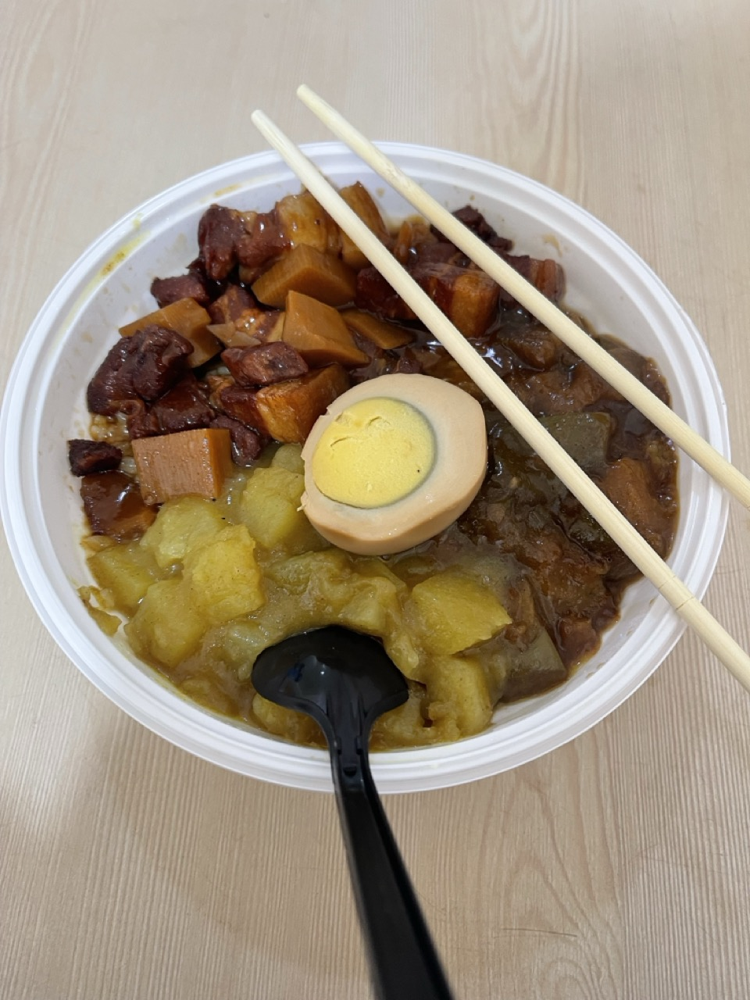
红烧肉盖饭
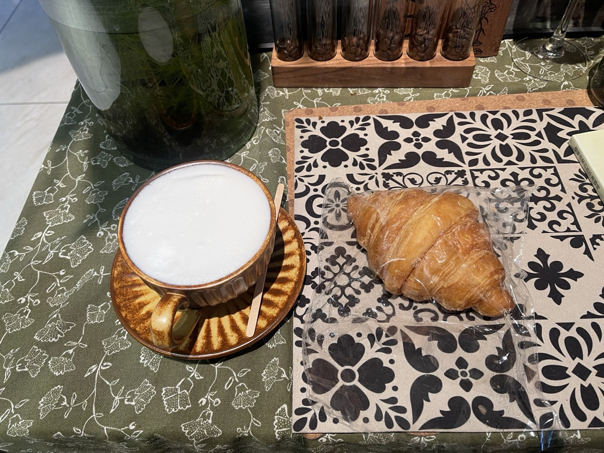
咖啡店下午茶
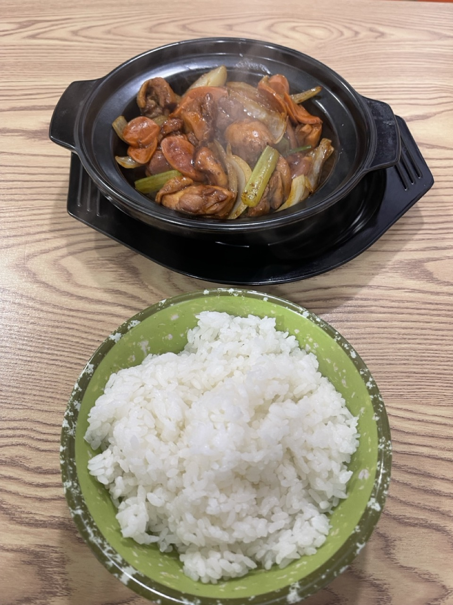
夜宵鸡公煲
心里也不明白为什么此前会一直搁置哈尔滨的游记。可时隔两个星期，去写完12号的游记后，我才明白写游记是一次场景再现的体验：体验在那些还留在记忆里的场景，发觉它们停留在脑海里的原因 。
独自旅游时，早饭通常是不吃的 - 往往晚上回到酒店就已将近十一点，睡前随便玩会儿电脑，和语音的大伙们聊会儿天，就将近一点了。第二天睡到自然醒，睁开眼就是十点，洗个澡，整顿好一天的心情：整理昨天拍的照片，挑选好的几张放到游记；结算一天的花费；再决定今天游玩的路线。做完这些，出门迎接外面的太阳时，都已是中午的十二点半了 。
- 中饭：延续昨天没有拉肚子的传统，我在酒店附近的小餐馆里简单解决了午饭。我发现对我而言，不拉肚子的秘诀，一是不吃太饱，二是不吃太杂；要是什么东西都往嘴里塞，哭的就会是自己的肠胃了 。
一碗简简单单的「红烧肉盖饭」，不过十二元，是比东北盒饭还要令我满意的一顿中餐。我走进店，当我要用美团券时，被告知直接付上面的价格就好，第一次遇到如此直接的商家。店里的空间很小，只有两三个紧挨着的靠墙的桌椅，显然绝大部分的顾客都是点外卖，而非线下过来用餐的。食物提供的方式也很简单，食材都是准备好的，肉、土豆、卤蛋，在被组合之前，会过一遍微波炉，加热到合适的程度 。
- 下午茶：走完下午前半段的旅程，身体略微感觉到了疲惫，便想着找个咖啡店坐坐，直到晚上预定好的戏剧「哈姆雷特」开始为止。附近有两家咖啡店，一家是随处可见的连锁店，不到十元一杯「库迪咖啡」，另一家是当地的独立咖啡店 。
前者进店后，室内没有一点轻松愉悦的氛围，耳边是有些吵闹的流行音乐，人们坐在高脚凳靠在桌子上，也没剩几个空位。我立马转身离开，投奔第二家 。
还没进门，就见到玻璃门后面的一只黑色猫咪，慵懒地躺在门垫上。我轻轻地推开，给它足够的反应时间。前台坐着两位年纪相邻的姐姐，在我点了杯「卡布奇诺」后，其中一位告知我说，一旁木架上的咖啡杯可以随意挑选，最后我选了图片里的这个，一款古色古香的木制杯 。
店里放着音乐，但调低了音量，当作背景音；一共三处给顾客休息的地方，现只剩下唯一的空位；三个位置隔得很开，对向我这般有些社恐的人很是友好，远远望去，一位是在专心学习的少女，桌子上放了很多书；另一位贵妇模样，倚在窗边，看手机的间歇，偶尔看看窗外 。
我的位置呢，是一张舒适的沙发，前面的架子上放了好几本书；眼前的桌布是浅绿色的，上面绣着花的图案；只有一个开口，三面临墙，一个特别舒适的小角落，正好没人在意，只有店里的小猫们偶尔会来眷顾一下，偷我的咖啡喝 。
后续在这呆了许久，一边吃着夹心的牛角包，一边喝着热乎的咖啡，看着HLE宙斯的比赛，甚是惬意 。
- 夜宵：为什么没有晚饭呢，大概是因为下午茶喝得太晚、太饱，所以晚饭吃不下了吧。可出了大剧院的门，打车回到酒店后，一个人走在将近十一点的大街上，肚子又突然感受到饥饿的袭来。好吧，让我看看夜宵吃点啥 。
本来是想看看有无蛋炒饭的，在这里旅游了那么多天，唯独一直见不到这道菜，甚是想念。可转了一圈，附近都是烧烤，太晚吃也不太好。最后投向了鸡公煲 。
去了一家近几个月新开的店，没想到它躲藏在漆黑街道上，旁边的店早已关门大吉，只有它亮着灯，店里只有老板一个人。老板是个将近二十七八的年轻人，下厨打理买菜全靠他一个人维系。和他简单地聊过几句话，话题当然是逃不过“来哈尔滨玩啊？” “已经去过了什么地方？” “我推荐你到哪里”等等 。
店里很安静，食物也简单干净，可我却出乎了自己的意料，将碗里的食物和一半的饭都解决了，我来之前真的没想吃这么多的 。
城市漫步：行走在结冰的松花江
今天严格来说，并没有路线规划，只有随心所欲地走，走到哪里算哪里吧 。
来到昨晚结束的地方，当时天黑，只看到围栏底下是一个大型的游乐园，临近关门的时间，里面并没有多少人，我在路边还偶尔听到人们的谈论，“哈尔滨要开亚冬会...” 当时的我还以为这里就是开会的地方之一，只有国家运动员才能进去 。
可到了白天，打开地图，我才明白原来这里不过是松花江边。而眼前的大片冰面，其实是松花江结冰后，当地设立的、冬季特有的游乐园。它也不需要门票，我跟着身旁的游客，一同进去了 。
所以就有了后来，看着手机上的地图，我可以人在湖的中心，仿佛真的能在水上行走一般 。
里面游客还挺多的，多半是带着小孩一同前来的家长们：小孩在玩冰上的游乐项目，家长在一旁摄影拍照。只是转了一圈，这儿的项目都挺重复的：用各式各样的载具，带着你在冰上转圈圈 。
偶尔也能见到在冰面上玩陀螺的老人，抽得跟个小孩似的乐趣。部分冰化掉的区域，还能看到冰面下的水 。
既然没有想玩的，我走了一圈后也就离开了。记得脑中有一个设想，既然湖面都结冰了，那么按道理我也能走完整个松花江，一直到对岸为止。可我问了路上的保洁阿姨，她说这里不能穿过去，那这个想法也就算了 。
那为了过岸，我就来到了「松花江大桥」上。这桥远远望去就挺漂亮的，其上是湛蓝色的天空，且在相机里，呈现的是渐变色，越往上蓝色变得越深；底下是结冰的湖面，与天空澄澈的蓝色相呼应，它呈现的是参杂了水和脚印的深蓝。唯有在天地中间的桥，它依次相邻的三座拱桥，和其底下无人问津的雪，构成了画面中唯一的洁白 。
到了桥上，身置其中时，便能看到远方的风景：一边是现代化、建筑林立的哈尔滨，另一边是被雪遮盖的自然风景 。
只是桥上的风实在太大，在没有了左右桥身的遮挡时，能吹得我喊疼。可我突然又想起了过去走「钱塘江大桥」时的回忆，那时天正大变，台风登录杭州的正当口，我抵着江下无边无尽的黑暗和江上风大雨大的摧残，也一路走了过来。这儿，在带上身上所有防具后，又有什么好害怕的呢 。
桥上同行的人并不多，能坚持到最后，恐怕更是寥寥无几。在走到尽头前，我偶尔能看到缓缓驶过的绿皮火车，我恰好能在车尾记录下它离去的时刻；也有推着车过桥的大妈 。
可桥的那头又有一些什么呢？从地图上看，那儿其实什么都没有，只有一个小的村落，而且交通方式也极其贫乏，除了公交外，去不了任何地方，但我也没多想，就这样走下去了 。
乡村的角落：船厂
过了桥，如果只能步行的话，那么「船厂」就是我必须会经过的地方 。
它坐落在桥下不远的地方，村子里的房屋都是由砖瓦组成，在阳光下呈现的一片橙色，只有少数涂上了白漆，上面用红色的大字写着「杂货店」。屋顶上还留有一些未化干净的雪 。
村里几乎听不到一点声音，让我这位外来者，仿佛体会到了一丝这里被哈尔滨外面世界所抛弃的感觉。路上也见不到行人，偶尔从远处拐角出现的，也都是爷爷奶奶辈的老人们 。
问了人才知道，这里唯一通往外界的公交车，一个小时才来一趟；公交牌早已破烂不堪，无力地倚在了破败的墙壁上；照相馆的出现有些突兀，墙上的照片也尽是年代感；还有上世纪七八十年代保留下来的教堂，新华书店，但都不知何时弃置不用了 。
时间在这里仿佛是静止的。一切在阳光底下，透着一股和谐和安逸的味道 。
在村里走完了一圈，最后我停在了入口的公交站牌上。在等待的半个小时里，身旁陆陆续续地出现了同行的人们：其中有四五位将近六旬的老头老太太们，他们聊天时彼此挨得很近，脸上的表情露出老朋友见面时的熟稔，聊的都是日常的琐碎事物。其中一位老太太特别能说，拿出一副我出生就在这里的语气，将村子里最近发生的大大小小的事分享出来 。
我在一旁静静听着。拜天气所赐，心情也很舒适。一直到有一对母子也出现在了我的身旁，她们摆出我刚到时盯着公交牌迷茫的表情。那时我就明白，她们想必和我的处境是类似的：我们暂时被“困”在了这里 。
我向她们搭话，以一种极其自然的方式，告诉她们班车下午三点钟才会到达。以这句话作为开始，在等车的剩下时间里，我也就能体会到，和同为此地游客的陌生人交谈的乐趣。母女俩的故乡现已忘记，从谈话中得知，她们也是一路穿越松花江过来的。只是和我走桥不同的是，她们居然是从结冰的湖面，一步一步踩在柔软的雪上而来 。
我们的对话吸引了一旁的本乡人。这下，对话的人数和内容就更广泛了 。
我原本一直以为，生活在这个与外隔绝的地方，是一件多么辛苦的事情。每次要么跨越大桥，要么等公交，才能到村外一趟。可听了领头的婆婆介绍，她在这里生活可谓多姿多彩，自给自足哪：住在设施齐全的公寓，村里还有闲散的土地能钟点自己吃的菜，闲了可以去村外逛逛，踩江上的雪真的是又软又舒适。都到了这个年纪，哪还愿意搬到别的地方呢 。
在婆婆的描述下，仿佛这里成了哈尔滨的一片净土 。
后续和婆婆们一同上了公交车，在途中便和她们分别了。那对母子前往冰雪大世界，而我则走在前往大剧院的路上 。
不知为何，每次回想起来，呆在这儿不期而遇的小村落的感受，竟是哈尔滨所有地方里精神性最好、最舒适的一次体验。想必，与单纯的景物相比，这里让我也见识到了一块地方上人们的风土人情，感受到了一丝人与人交流时的美好 。
哈尔滨大剧院：初次欣赏戏剧《哈姆雷特》
这次想看一场戏剧的想法，是上次在北京和阿呆一起游玩后延续下来的 。
上次事发突然，说在北京找个戏剧或者音乐剧看看。可是，这些节目通常可遇不可求，好看的往往都得预约到一个月之后 。
于是，在我到哈尔滨的当天，我就点开了当地的戏剧节目，看看里面是否有无我所熟悉的 。
这才找到了今日的节目：《哈姆雷特》 。
这个剧本，我在大约半年前读过。当时刚听完一期有关莎士比亚的播客，想着我居然这么多年都没有碰过他的经典，便随手拿了《哈姆雷特》去读 。
当时不过花了几天的时间。可读完却一点都没有醍醐灌顶的感觉。不管书后的评价，怎样去夸奖里面主人公的「伟大」，可我却一点都没有体会出来 。
或许是那偏古老的预言，又或是有些纷杂的剧情，这些对初读戏剧的我来说，都构成了一道阻碍 。
于是读完后，在没有得到阅读的乐趣下，我便没有再读更多他的作品了 。
这次我准备再给他一次机会。毕竟播客里的博主们，他们都是看的「表演版」，或许演员们的肢体语言能帮助我理解剧中人物的内核 。
哈尔滨大剧院内部装饰很是豪华，会场很大。我挑了个舒服的沙发，在上面消磨时间，离开场还有将近一个小时 。
正式入场前，还要把随身的包上交，且不允许携带食物入场，连水都不行 。
戏剧的版本是由卷福担任主角、于2018年由NTLive出品 。
开头我花了相当多的精力，去适应我第二排的位置。当初就应该买第一排的。这里座位的设置相当不合理：间隔太小，远方的影幕太低，前排的人会遮挡掉部分视野，让后排的人看得相当难受 。
最后我把头正放在前排人的中间，才稍微缓解了遮挡问题 。
再说说戏剧本身的内容。卷福饰演的相当有表现力，虽然我还是会时不时地，把神探夏洛克的身影投射到他的身上 。
「每个演员都要经历饰演哈姆雷特的阶段，那是他们迈向成熟的标志」在影片开始前，卷福这么说道 。
至于剧情，是和书中写得一致，演员们的台词也一句未改 。
可观看的体验，却和阅读剧本完全不同。书里的台词，只能让人明白发生了什么，可却无法活生生地看见人物的挣扎与表情。后者，正是通过演员们的表演，才能够传达给台下的观众 。
我也才明白，为何说「一千个读者中，就有一千个哈姆雷特」。每个当主角的人，都会有自己对人物的诠释，这和他们自身经历有关 。
当我在台下看卷福的表演时，有时也会幻想，如果是自己说这句台词，我又会用怎样的语气和怎样的肢体语言，才能表达出我内心的感情 。
同样，也是这样的代入感，让我明白主人公内心的挣扎，以及在巨大挑战前，他所展示的「伟大」 。
和那些天生坚毅、自带勇气去挑战的人物不同，哈姆雷特是犹豫和挣扎的。这一面总会让我联想到常人：每个人在人生里总会遇到一次巨大的挑战，它虽然不会像剧中杀父之仇那般仇恨，可对正在经历的当事人来说，总归是痛苦的 。
所以他才说，「To be or not to be」。自然可以不去管它，就这么心甘情愿地向挑战屈服；但也同样可以直面使命和痛苦，向命运抗争 。
即使百般受挫的主人公，他在犹豫中坚然地选择了后者。这便是我目前所理解的，他最伟大之处 。
在明白了这点后，才能体会到为何莎翁的剧是永恒经典。在矛盾和人物被戏剧化的作品里，却能看到有关人的永恒主题 。
一次线下的观影，就能点拨到自己，发现光从阅读剧本中所无法体会的东西 。
自此我才明白看戏剧的乐趣。后续也读了莎翁的「麦克白」和契诃夫的「樱桃园」「凡尼亚舅舅」 。
第九天
2月14日：在哈尔滨迷茫
一日三餐：简餐与夜宵
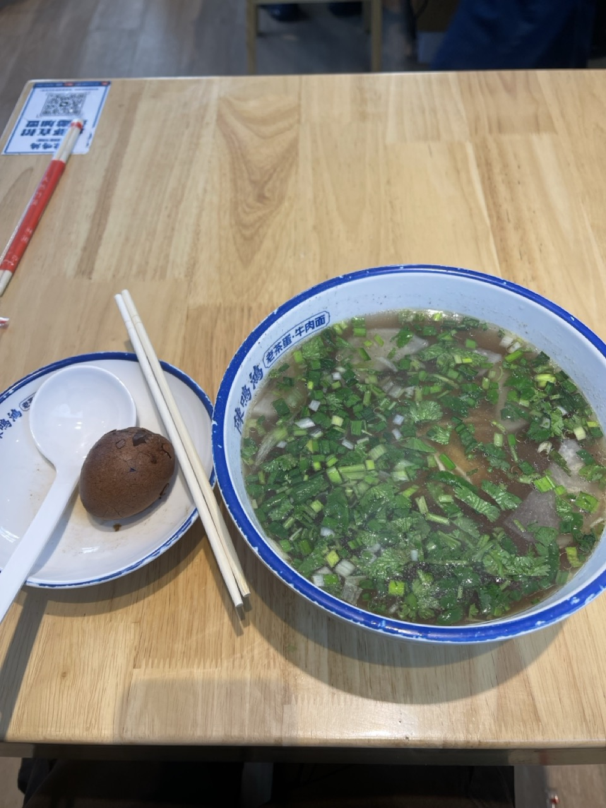
牛肉面
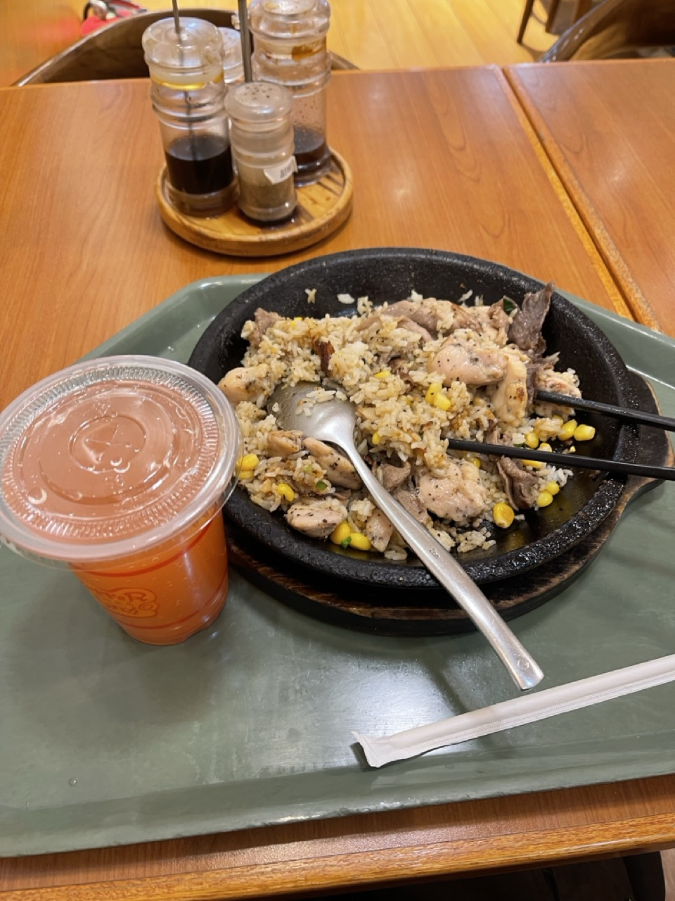
双拼饭
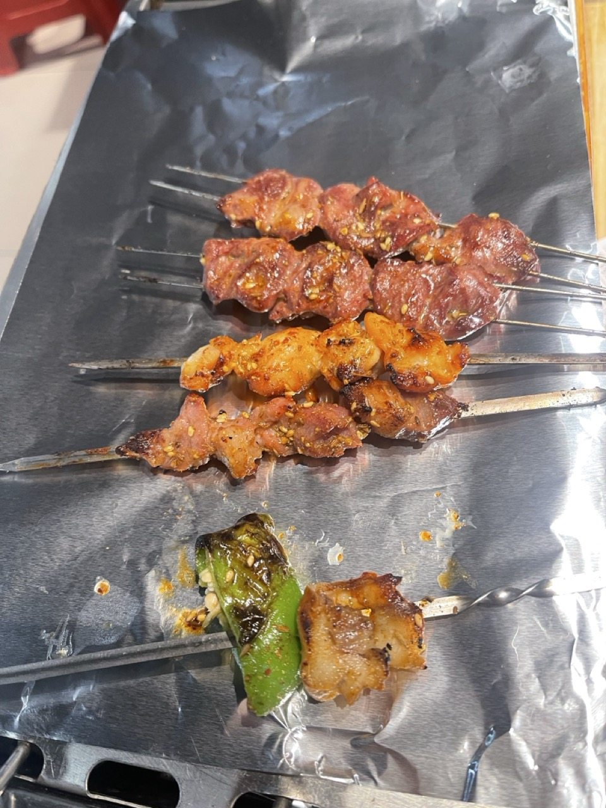
夜宵烧烤
- 中饭：中饭依旧是在酒店周边解决的。在前往「巴洛克街区」的路上，我已不止一次遇到了这家面店，它处在地铁和酒店的必经之路上。刚好今日的中午想吃一碗面，相比干燥的饭，有时对带汤食物的渴望会更强烈一些 。
遂进店瞧瞧。当然瞧之前，也大致浏览了一下点评上的评价：在价格实惠的基础上，口味也还不错。进了店后，一看，嚯，面积挺大的一家店，里面居然坐满了人，我连一个空位都找不到 。
点餐跟老板直接说就好：一碗牛肉面，加个蛋，打工人的老配方 。
等了五分多钟，才有空位。面也差不多这时就好。面汤上洒满了小葱和香菜，遮盖了底下寥寥无几的几片牛肉，除此之外，便全都是面了。至于味道，和路边的兰州拉面差不多，只是汤底味道更重一些 。
卤蛋倒是很入味。正如老板所说，卤了十多个小时，不入味也很难 。
- 晚饭：下午逛完「哈药六厂」的所谓“展览”，休息了一会儿，就差不多到晚饭的时间了。我需要临时决定晚饭吃什么 。
要是放在从前，当我身处一个陌生的地方时，我只要点开附近美食，挑选一家距离和价格合适、口味独特一些、最好再提供单人套餐的店，也就行了 。
可今日却不同。我看上了好几家店，里面有适合一个人吃的日料店、也有价格美丽的西餐店。可是，却该死地遇上了节日「情人节」！
那些本来适合单人用餐的所有店，纷纷下架了单人套餐。取而代之的，都是价格有所加成的「情人节双人套餐」。好哇，一个节日，餐厅美美地盈利，情人们美滋滋地享受一起的用餐，只有我一个人，变得哪儿也去不了 。
记得那时在路边游荡了将近一个小时，最后也没有决定去哪里。无奈之下，朝老套的商业城走去，于是就有了今晚的「胡椒厨房」双拼饭。（店名要是改成胡闹厨房的话，说不定会更有人气一些。）
一碗将近四十的双拼饭，被端上来时，石锅里的油滋滋地响着，烤着那还半熟的鸡肉和牛肉。最后这些肉与饭搅拌在了一起，还有少量的玉米作为调料，缓解一下碳水的重味 。
虽然端上来现烧给食物增加了一些新意，可实际吃上口，味道却是如此的普通。是的，正如店名所示，饭和肉里自带了一股胡椒的味道。其中，石锅中的米饭硬硬的，鸡肉很软，牛肉偏硬。开头的几口还算不错，可吃多了，却不过是肉类的重复罢了 。
一旁的「lucky水蜜桃汁」被掺了太多的水，味道很假，喝了一口便丢进垃圾桶了 。
只能说太一般了 。
- 夜宵：今日夜宵吃了一顿烧烤，里面有一串烤肥肠、两穿鸡心、一串羊肉串和一串掌中宝。我连夜宵都吃的是如此的「节制」哪 。
时间回到晚上，当我如往日一般走在回酒店的路上。我不以一次地发现，酒店附近全都是烧烤。大大小小的店，对于初来乍到的我，就算想吃上几串，也不知该进哪家店才好 。
最后索性进了离酒店最近的这家。它刚营业不久，而且价格公道，在店的外面就显示在了营业牌上 。
店里的顾客并不多。我本想点好打包，然后回酒店，一边看剧，一边吃着夜宵，这画面想想都很美好。可看了我那渺小的胃，和点的一共不到15元的烤串，吃光它们不过一眨眼的功夫，又何必污染了晚上睡觉的环境呢 。
随后我便坐下慢慢地享受。每个烤串都被我认真地对待，而且它们也没有辜负我。每一串都烤得恰到好处，表面滋出来的油汁，更是让它们显得闪闪发亮 。
肥肠又脆又香；掌中宝既软，却又带着点韧劲；羊肉串很香，特别是它脂肪的部分；就是这鸡心，和想象中的不太一样，这里太敦实了一些 。
超满足的，特别是考虑到它相当美丽的价格，我恨不得天天都来这么一顿 。
可是，在其余的夜晚，我已经有草莓、香蕉的陪伴。对不起，烧烤君，要是你能再健康一点，我一定天天和你在一起了！
松光里书店：可怜
自真正认识「旅游」之后，我认识一座陌生城市的文化程度，总是通过它的书店和公开的艺术展览来了解 。
哈尔滨的书店并不多，能叫的上名字的，有些热度的，乃就更少了 。
这家叫「松光里」的书店，就在酒店的附近，躲藏在「巴洛克」商业街中 。
我当时来回走了这条街两边，却硬是没有发现它。直到开了导航，才得知它在一道侧门的背后。门上大大地写着几个字，“网红打卡点！”
只见里面四方如胡同的地，被红色的楼梯、绿色的挂件所装饰。有不少女士在楼梯上摆拍 。
还未进门，光是这一点，就足够我对这个书店的印象分大打折扣了 。
直到走进门内，看到和外面装饰类似的网红摆设，那纯粹是给人「出片」用的 。
店里天花板光秃秃地暴露着，悬挂着从俄国作品里摘录的「鸡汤式」语句，除了那几个可怜的书架外，便再也没有别的可看的了 。
店里一大半的空间都给了来此自修的人们。自修室的另一边墙上，放着一堆破旧的旧书。我在里面翻到了贾平凹的《废都》，保留了部分色情描写，可惜也还是删减版 。
最后只剩下店里的文创产品未逛。又是主打俄国作家，那些叫的上名号的，陀氏、托翁、普希金等。可我却不见店里有放着他们专门的巨著，只有可怜的头像和画作罢了 。
是一个没有内容，连外表都得不到我欣赏的、可怜的书店呢…
哈六制药厂：可怜X2
如果在小红书搜索哈尔滨的艺术展览，那么这儿的「哈药六厂」就是其最具人气的推荐了 。
尔滨总是这样，还没有正式入场前，就会在门口见到它的各种名号。这次，门外的大标语写着：「东北卢浮宫」 。
我不禁冷笑了一声，根据刚才的书店质量来看，如果馆内的展览能抵得上卢浮宫的1/10，也算烧香拜佛了 。
先来看看建筑的外观。当我仰视着整座建筑，它钟楼式的圆拱、整齐划一的阳台与天窗设计，确实有一副气派 。
但以往的经验告诉我，或许这便是这里的所有的闪光点了。毕竟艺术展览看的是展品的内容，而不是装载它的画框 。
当走进建筑内部，一楼的右手边就有一个咖啡店，左边的走廊两侧开得全都是药店 。
我不禁产生疑问，莫非，这里不是哈药六厂资助的艺术展览，而是有着一些艺术展览的药厂店？
一旁的标语写着看展请到六楼。没有电梯，只能步行前去。楼梯上的环境很暗，根本不像有展览的样子 。
原本以为挂在楼梯口两侧是什么精彩的画作，定睛一看，好家伙，居然全都是AI生成的药厂广告，且广告植入的方式相当离谱：里面的人各个都是西式模样，一家庭本其乐融融地在火炉前吃茶点，可桌上摆的却是一大盒药品。把你药厂的药当下午茶喝呗 。
终于走到六楼。走廊的装饰是一样的俗气，表面看上去金碧辉煌的，什么水晶灯、儿童天使像，可没一点实质性的内容 。
走廊上停满了人，大多都是拿着自拍杆在拍照的小集美们。辉煌的外观，正好配合了她们费尽心机的化妆 。
展览放在两侧的门内。放得都是1940-2010年较为现代的中国画作。看一遍下来，能稍微打动人心的作品并不多。我只用手机记录了两幅 。
一幅是游牧民族的少女，她半露乳房，眯着双眼，尽情呼吸地新鲜的空气。鸟群在背景里飞过。我觉得作画的主题应该是「自由」 。
另一幅是领救济的人们。他们各个都低着头，仿佛在苦难面前自己早就丧失了做人的价值。让人想起王小波笔下的，中国人沉默的本性 。
里面还有别的历史题材的作品，从抗日战争时期，到宣扬的爱国主义，什么都可以摆放在这里 。
五楼本是展览俄国画家的地方，可却改成了药厂的企业宣传 。
一趟走下来，收获甚微，完全不像是做展览的样子。内容这般的空泛，是外表再怎样艳丽都弥补不回来的，只会徒增内外的对比 。
所以，我仿佛看到了书店的延伸，这里同样令我感到可怜 。
龙塔：真有必要上这类塔嘛
倒不是我真的想上这一类的高塔 - 那花了一张大米的门票、上去不过是看两眼就可以下来的地方，而是这附近已经没有别的游览项目了 。
上塔之前，对夜晚的它拍了一张仰视角的照片：在黑夜作为布景下，龙塔散发着金黄的光芒，两边的线条对称式地斜向上收拢，直到变成塔尖为止。接近尖端的部分，有个作为露天观光台的圆盘，上面可以鸟瞰全市的夜景 。
这便是我对它唯一感到满意的地方：拍了张不错的照片 。
我在闭塔前的四十五分钟才乘坐电梯上去，那时塔里已经没剩多少人了 。
说是说一共有三个可供游览的地方：一个是脚下装着透明玻璃板的「太空环步」：那玻璃上满是污点，且透明的区域很小，还要收额外的套在脚上的塑料袋钱，我的评价是一坨答辩，简直是对上海的拙劣模仿 。
一个就是在底下看到的观望台。据小红书报道，推荐来打卡的时间是下午日落时分，那时会有一轮红日挂在天边，落下金色的光芒，配上打扮的小仙女最为合适 。
但此刻是夜晚九点。外面只剩下被霓虹灯所照亮的黑夜，在黑压压的城市中间，点缀着散发出金黄光芒的夜灯，也有川流不息的交通干道，它们有如一道奔跑的河水，向远方流去 。
我转了两圈，便也很快对眼前城市的夜景失去了兴致 。
最后一个地方是在最顶上，是观望台的次版。那里只能透过一层厚厚的玻璃，才能望向远方。那直接到达肉眼的金色光芒，全被那玻璃遮挡、削弱，再进到人们的眼睛里时，早已什么都不剩了 。
我在顶楼的椅子上休息了一会儿。期间听到售货员的两次售卖，一次向带着小孩的母亲推销有名字的串珠，另一次是对显然来此旅游的游客下手。开头聊得还算有兴致，可他们一听到价格后，立马就蹦撤卖溜了 。
我也跟着他们溜走好了。这里再也没有别的东西吸引我了 。
第十天
2月15日：在哈尔滨漫步的一天
一日三餐：咖啡与简餐
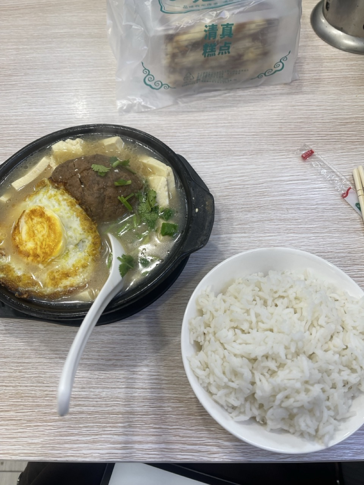
狮子头砂锅
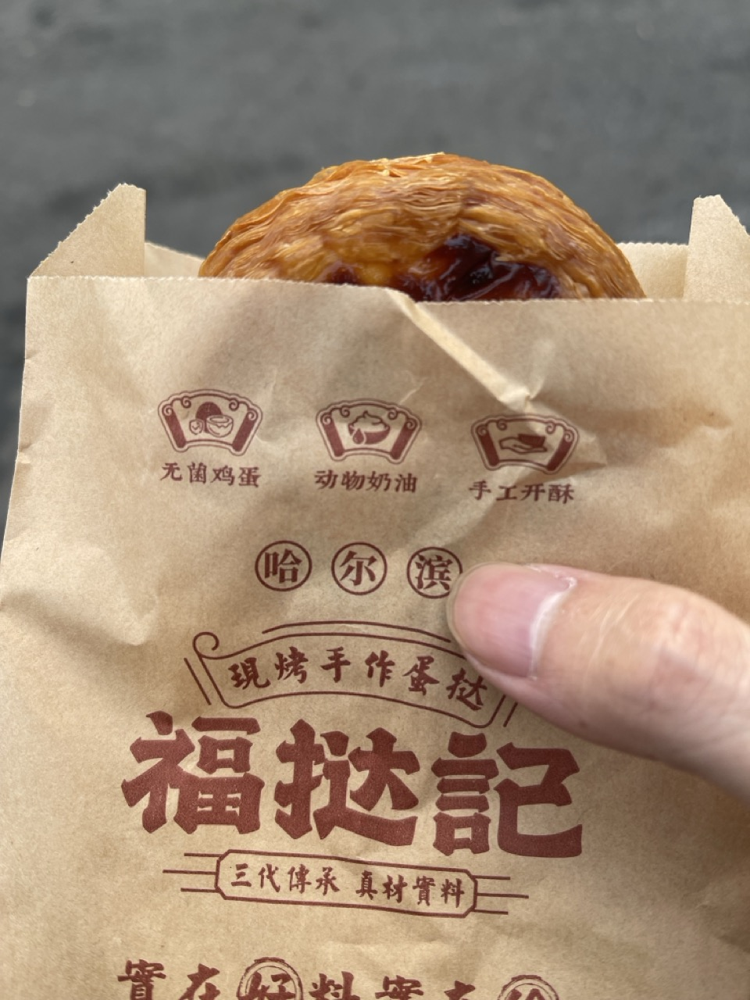
下午茶
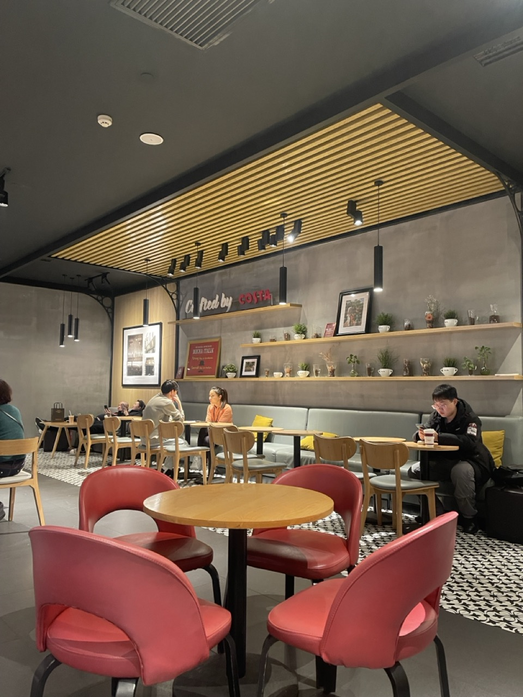
珍粥道
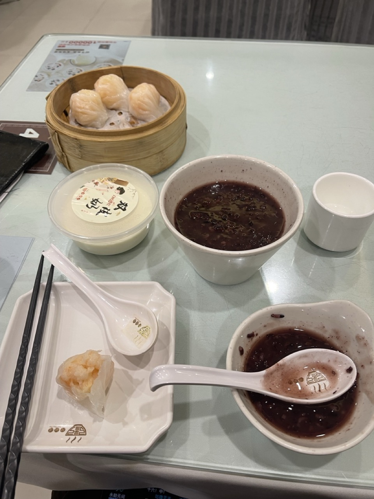
餐后甜品
- 中饭：抱着“每天都应该吃不同食物”的决心，这次的中餐，是在酒店附近的一家砂锅店里解决的 。
又是一家当地人所开的餐馆。面积不大，来吃的多半是附近的平民老百姓。而我此次前来，也可以假装这个身份，体会一下当地朴实的生活 。
在看菜单时，不禁对一个要12元的狮子头惊异，凭着我对本地物价的认知，除非这里的狮子头，一个能抵我们那边四个，它才能得到我的认可 。
为了验证这个猜想，我最后点了一碗「狮子头砂锅」，还不忘多加一个煎蛋 。
当它端上来，我定睛一看，心想：果然如此，我不愧是名侦探Conan，这个隐藏在汤里的狮子头，捞出来一看，比我一个拳头都TM的大。它事先被切成了四份，每一份都是家里一个正常大小的分量 。
简直可以把它当饭来吃了。事实也是这样，最后米饭剩了半碗没动，狮子头配着其余的配菜，一口肉、一口鸡蛋、一块豆腐、再喝一口汤，按照这样的顺序进到了我的肚子里 。
事后，我对能吃完锅里的自己表示惊讶！原来我比想象中能吃啊 。
- 下午茶：已经忘记了何时培养起了这个习惯：下午三点多的时候，总喜欢点一杯喝的，配上一些小零食，休息一会儿 。
走在「秋林公司」那条街上，那儿的街边美食塞满了整一条街。当我看到其中一家专卖蛋挞时，我就变得有些走不动路了 。
想起上次在洗浴店里吃自助，我一直不舍着吃蛋挞果腹，这次我要弥补上一次的缺失 。
可当我走上前，一询问才得知，这里出售的蛋挞都是冷的。em... 怎么感觉连KFC都不如呢。于是我便只要了一个。幸运的是，还好我只要了一个。冷的蛋挞吃起来跟面包一样 。
咖啡是在商业城里点的。又找了个休憩的小角落，一边喝，一边看会儿比赛。宙斯又拿下了呢 。
- 晚饭：在有了上次在商业城里吃饭，体验却不怎么样的经历后，这次的晚饭我再次开始外出寻觅 。
我又毫无目的地走在大街上，直到看到了一家卖粥的店，才想起：哦，原来我已经好久没有喝过粥了。那么，今晚的主题就是它了 。
店名叫「珍粥道」，一楼是服务大厅，用餐的地方位于二楼。大概是到得晚的缘故，有许多空闲的服务员前来接待。看了一眼周围，大多是聚餐的家庭，少有一个人吃饭的 。
接待我的，是一位胖胖的女服务生，年纪并不比我大多少。我扫了一遍她递给我的菜单，这家店主打的是类似港式的点心。按照推荐，以及评估了一下胃的容量，我点了喜欢喝的甜粥「八宝粥」，一笼「水晶蒸饺」，点心选了「原味双皮奶」 。
后续在吃的过程中，女服务生偶尔会过来询问我需要些什么，后续递给了我一小桶白糖；还有就是经典的写评论会送东西的活动。后者不吃白不吃嘛，而且现在服务越来越周到，我直接把手机给她，让她来操作就好 。
只是没想到，她拍照和打字花了将近二十分钟，看得我都心累。一问才得知，她说她不习惯这个手机的键盘，她得适应好一会儿。有些笨拙的样子，其实挺讨喜的 。
再说说菜品。「黑米八宝粥」量很大，很粘稠，里面只有食物原本的味道，甜味是我后来加上去的；「水晶蒸饺」皮薄馅多，里面的虾仁味道新鲜，跟蒸的活虾一样；双皮奶味道也挺原汁原味的，很干净 。
虽然看上去东西不多，可一个人要吃完，还得花上不小的力气。最后吃得很撑就是了 。
下午的城市漫步：教堂
如果说昨日的行程是去拜访一下哈尔滨能叫得上号的景点，那么今天则是捎带目的的城市漫步了。此行的目标，是游览散布在哈尔滨各地的、大大小小的教堂 。
这些教堂都集中在一块方圆3km的区域内。按照小红书上推荐的游览路线，跟着走就完事了 。
先到的是一个叫「职工文化广场」的地方。可小小一个文化广场，里面却见不到任何一个工人。地方很是冷清，一旁的配套设施，比如影城，戏剧舞台等，都没有开放。（后来得知，这里离哈尔滨同学家不过两个街道远。只是当时他已经返校了。）
穿过广场，去到最近的「阿列克谢耶夫教堂」。听网上评论说，教堂绝大时间都关闭着，不对外开放。但若是运气好，碰到他们在礼拜的话，就可以一睹教堂内部的风景。但我去的时候已经关门了。只能看看教堂的外观：红色的建筑、城堡式的圆拱、写着天主教的钟楼。教堂周围人不是很多，只有几个小集美们在此地拍照打卡 。
后头去的「圣母教堂」也是类似。只是看个建筑外观，只是它的主色调采用橙色，建筑相比下，更小更圆润一些 。
「尼埃拉依教堂」开着一个侧门，门内有位中年妇女接待。作为信徒，她相当和蔼地和我打招呼，并在听到我想要参观的请求后，指引我到她们诵读圣经的礼堂里去。我在礼堂坐了会儿，那地方与气派的建筑外观相比，更像是一个小教室：长椅密密麻麻地排布在底下，台上有个步道的讲台。随后就和信徒道了再见，还模仿着她的语气，说了句「上帝保佑你」 。
「南岗区天主堂」是个和办公楼合并在一起的教堂。我跟着指示牌的方向前往入口，进去一看，一楼像是地方企业的接待处，里面有两位年纪稍大的阿姨坐着，显然是快到下班时的闲聊。除了我之外，没有其他一个游客。我礼貌地问她们这里有什么可以参观的地方，她们才说这地方是办公楼，二楼的礼堂是供信徒祷告用的，才不是什么可以「参观」的地方。不过，说完之后，她还是指指一楼挂在墙壁上的、一个规模很大的壁画 。
那是「最后的晚餐」。初中在美术本上看到过，可我却从来不知道画中的内容。阿姨见状，好心地替我讲解起来，“这是达芬奇对耶稣和他十二门徒的刻画，当时耶稣在晚餐上刚宣布门徒中出了一个叛徒的消息。你看画里的人物表情各不相同，议论纷纷。” 说完后，她还当场给我出了个题，问我叛徒犹大是哪一个。“给你一点提示，就他相当不同，一只手还拿着食物，表情凝重。”
听完这个提示，我开始思索，眼神从左到右、从右到左地观察，可当我带着疑虑的眼神去看待他们时，我觉得每个人都是叛徒。他们的表情各个都挺凝重的，我一点也区分不出来。后来还是靠了谷歌，才找到了问题的答案 。
也算是一个不错的收获：至少了解了一幅传世名画的内容。最后和阿姨们唠了会儿嗑，互道再见后，就出门离去了 。
除了以上游荡的教堂外，沿路还是拍了一些别的照片。比如可以体现哈尔滨当地物价的面包店，里面的面包不仅大小符合我心中东北人的固有印象，价格也是，大概是杭州的6-7成；也看到了沿路售卖的整箱草莓，9元一斤，虽个头不大，但每个看上去都红得鲜艳，非常可口的样子；见到一所外观西式的幼儿园，让我好奇内部的会是怎样 。
总的来说，走得越多，越觉得哈尔滨的很多地方只是空有一个外表而已，往往建筑的内在比不上外观，且绝大多数甚至连一点游览的内容也不提供 。
夜晚的城市漫步：松花江
当吃完晚饭，肚子里塞满了粥，全身感到暖洋洋时，我开始思考夜晚剩下的时间该怎么度过了 。
记得上午在哪里看到一个推荐本地「音乐长廊」的帖子，那里距离我有将近6km远，步行需要一个小时。而这正好符合我饭后散步的需要 。
去长廊的路上，先经过了一个交通主干道，夜晚的车流时不时从身旁经过，向看不见的远方驶去。主干道旁就是松花江。这已经是我第二次再见到它了。只是这次改走江的西边 。
当我一个人靠在栏杆边，望向那近在眼前、已结成冰的江面，以及江上不远处，那全身散发着金光的大桥时，心里不得不拜倒在夜晚的魔力之下：周遭静悄悄的，只有我一人；迎面吹来的风，不断刺痛着忘带手套的手；江面是洁白的雪，一直延续到河对岸；码头的阶梯被埋藏在了雪地下，让人分不清江的界限 。
界限消失了，让人有了「像上次白天一样，在江上行走」的幻想：我可以悄无声息地，就这样走下去，走到那看不见的黑暗为止 。
可现实还是让我却步了。我连江的界限都不敢试探，只是走在一旁没有雪的行人道上。一边走，一边看：可以看到河对岸有个巨型的摩天轮，后来才得知那儿便是此行未去的冰雪大世界；一边想：晚饭水喝多了，突然想上厕所了怎么办 。
突然，远方的江面上出现了一辆电瓶车。一个外卖员模样的人骑在车上，在江边的雪地上缓缓前进：这真的不是闹着玩的吧 。
只见他一看到一个可以上岸的码头，就尝试把车骑上去；如果失败，就换下一个码头 。
骑行的速度与我步行相当，我想他也感到害怕吧：若是冰裂了，后果不堪设想 。
一个又一个的码头从他身旁经过，他还在雪地里前行，直到终得停下来，拿起手机打起电话来 。
这时我已越过了他的身位，见到不远处另一个穿着外卖服的小哥从对面经过，向他的方向驶去。后续他们把车弄上来的经过我并没有目睹，因为当时我正学着所谓「本地人」的样子，进草丛里小便去了 。
再往前走，来到一座小桥上。那里是结冰和液态水的分界线，雪的洁白与水的黑暗被一条直线所切割 。
身体越缩越紧，是快要抵不住严寒的架势。可却没有回头路可言 。
走过大型的「雪人码头」。作为一个雪上游乐园，在将近晚上十点，工作人员才陆续地走出来，喊着下班 。
最后便是此行的终点站「音乐长廊」。那里有一个长廊，长廊同别处一样，闪着金光，只是里面空无一人，也没有任何音乐；长廊中间有个大雪人，雪人前有不少摄影拍照的集美们，其中一个还穿着短裙，坐在阶梯上，专注地摆着姿势让摄影师拍照，我看着都冷 。
休息时，看了一眼手机，已经有了2w步，今日的目标也已达成，准备打道回府了 。
第十一天
2月16日：在哈尔滨惋惜
一日三餐：最后的简餐
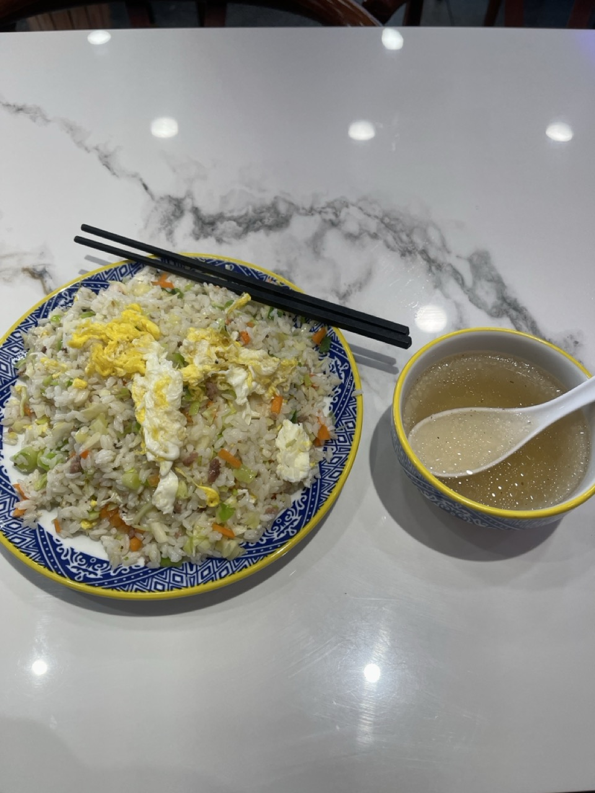
最后的简餐
今天便要回去了呢。其中的心情，是带了一些的惋惜，北方之旅就要在今天结束了。可惋惜之中，也带着一丝确幸，和呆在北京的最后几天一样，此刻的我已经不知道尔滨还有什么地方值得我去探索了 。
连中午十二点在酒店退房时，我都还没有想好今天要去到什么地方。最后在小红书上找了个所谓「小众路线」，打算去看看尔滨的公园和商业城，里面还有一家大型书店 。
- 中饭：可能是想吃炒饭的心情大于一切，我已经饥不择食了。在去乘公交车的路上，当我见到了一家「兰州拉面」时，我都能在店的面前驻足几秒，犹豫我是否该进去点碗炒饭吃吃？
最后我被这意愿折服。“老板，我要一盘兰州炒饭。”
当炒饭被端上来时，开吃前我对它还细细观察了一番，北方的炒饭和南方的会是一样的嘛？只见饭上撒着几片很大的鸡蛋，牛肉粒却很好地躲藏起来 。
和杭州吃过的炒饭不同，这里的炒饭口感要更硬一些。对于喜欢“吃软饭”的我来说，稍显难吃了一些。不过，出于对炒饭神的尊敬（如果真的存在的话），我还是将它吃得光光的，顺带喝了一口汤 。
汤的味道倒是没有什么不同，一样的咸 。
- 晚饭：看了看日历，其实今天也吃了晚饭的。只是出于时间考虑，我没有在外头的商业城吃，而是先打道回府，拿回了在酒店的行李，然后去了老地方吃鸡公煲 。
他做的菜还是相当好吃，这次加了生菜，配合浓厚的酱汁，简直无敌。这次的米饭也快吃完了。在下午喝了一杯奶茶的情况下，这已经是我对这家店最高的敬意 。
然后，便是收拾碗筷。离开前，不忘把餐桌上的垃圾整理到碗里，然后和那里接管一切的老板说了声再见 。
欧亚之窗公园
与北京随处可见、大大小小的公园相比，尔滨的公园也算得上是稀有了 。
这次去的一个叫「欧亚之窗」的公园。听名字，又是无比的气派。我至今都不知道这个名字从何而来 。
公园坐落在居民区的附近。走到那，需要经过一座小桥，桥下的流水此时结了冰，一旁也竖有牌子，好心地提醒人们不要在其上行走；而我则踩在路边未化干净的雪地上前进 。
下午天气晴朗，有高挂的太阳。我一路走，也没忘记在语音里和大伙们闲聊着天：tf和伦宝在打炉石，桃酱在魔兽。此番悠闲的情景，仿佛让我提早回到了家 。
公园里的游客寥寥无几，带上我，也只需一只手就数得过来。离入口不远，有一座黄色的小城堡，它在阳光下熠熠闪光。我忍不住走近门内看看，可除了一座涂鸦墙外，城堡里什么也没有 。
随手拍了一句别人在此留下的文字，「心情很down，但拒绝emo」。大概down和emo之间有着微妙的区别，人可以失落，却不抑郁 。
再往里走，就能看到一片桦树林，其中有一条木质的小道笔直地穿过，小道旁是满地的积雪，偶尔能见到在此跑步锻炼的老爷爷 。
穿过桦树林，来到一个开阔的场地。里面有一座结了冰的人工池。有一个描绘在看书的女子的雕像立在岸边 。
公园嘛，活动以散步为主。走着走着，就到了出口，公园行也就自然结束了 。
可悲的艺术馆和商业街
当时想走这条线路，就是因为这附近坐落着一家艺术馆。虽然有了上次糟糕的经历，可我转念一想，我不过游玩了四天，不该就把这座城市的文化水平就定格在我脑海中的样子 。
我想再给它一次机会 。
可对这座城市不了解的我，又怎么会知道，这次去的「红墙艺术馆」是一个比上次「哈药六厂」还要大便的一个地方 。
既然坐落在一个商业城附近，它大概会有足够的人流量，也就对应足够的资金。那么这么推导下来，也就有更多的作品可以观看 。
可现实却完全不是这样。艺术馆虽有两层，可绝大部分的空间都是空泛的，只有两个小型展览，一个收取六十、另一个收取将近一百的门票 。
要是里面真的有内容，那付钱也就算了。可那展览都是些什么哪？一楼是蝴蝶服饰的展览，虽然时装行业进军卢浮宫是最近的新闻，可当我看到展览里清一色都是集美们在蝴蝶旁摆各种姿势的场景时，我瞬间冷静了下来 。
二楼更是离谱，打着什么VR的口号，与什么的仙侠类游戏联合，简直不是人该去的地方 。
怪不得这个艺术馆外面的墙壁上，都是化妆品的广告。除了染上商业气息，这里的文化却是没有一点展示 。
它真的是一座有空心建筑的城市。那些建筑，还不比上我在一旁看到的儿童作品来得淳朴（虽然有很重的成人指导的意味，体现在它们画的主题和内容彼此重合度极高），它们却真的有在好好表现尔滨旅游出名的地方：「马迭尔冰激凌」、「索菲亚教堂」、「中央大街」、「格瓦斯」、「大雪人」。这些在过去几天去过的景点和品尝过的味道，都画在了一张图纸上 。
也不如我偶尔在路边能看到的、对名胜古迹的模仿：它们规格较小，但也还是让人能看得出本尊：比如那拉着小提琴的贝多芬；那宣扬胜利归来的凯旋门 。
所以，直到我离开这所城市，尔滨也没有办法再去改变我心中「文化有些贫瘠」的形象。总觉得，它是使劲地模仿，只会拿那些西方的经典作为宣传的噱头，可却没有一丝自己东方魅力拿得出手 。
后续在商业楼休息了很久。都是旅行的最后一天了，却感到了前所未有的心累。感觉和以往一样，中了商业城的陷阱，被无助地困在了这里 。
不过休息的途中，有看到好几个Coser，她们扎堆地聚在一起。我对自己能认出其中两三个角色感到高兴：有银魂里的「神乐kakura」，有鬼灭里的「水柱」，也有拿着洞爷湖木刀、从我身旁走过的「银桑」 。
*** 后续的行程是：在这个商业楼休息完了后，去了挨得很近的另一个商业楼。那儿还有个大型书店，不过旅行至此，我已不抱太多的希望了 。
或许是在这般失落心情的铺垫下，我在这个「众创书局」里连一本书里的十几行字都看不下去 。
书局是和咖啡店联合的现代经营模式。一楼是咖啡店消费后的落座区；书局采用螺旋式的结果摆放书籍，每隔个几米，就设立一个中央的自修区（座落在如此嘈杂的商业城，我不知道她们是怎么静下心学习的） 。
螺旋结构最不好的一点，是找书和拿书的麻烦。墙壁上几乎有一半的书需要借助梯子才能够着 。
总体来看，也属花里胡哨的类型 。
最后再说些小的细节 。
其一，是看到的走T台的小女孩。小小年纪，就能看到她脸上做模特时的面无表情。整个走路的方式，散发着气场，让人不禁被她的炫酷折服 。
其二，商业城里一个二楼到六楼的通天扶梯还挺帅的，行进速度也相当快 。
其三，是瞟到书店隔壁影院外哪吒的宣传。只是上面写着120一张的价格，让人劝退 。
最后，当我走向地铁，像是为我饯别一般，尔滨下起了小雪。让人不禁遐想，当我下一次再见到雪，又会是在何时何地呢 。
总结
此次东北旅行的总结
也不是说非要写个总结，旅程才算真正的完结。只是在群里发完三人一起旅行的游记之后，被tf提醒了一下，我才想起，我本就有意去给这个游记加上真正的结尾：反思一下旅行的整体感受，必要的话，再补充一些印象深刻的细节 。
既然是反思，那么我便直言不讳地说出自己的想法就好了吧。其中有积极的部分，自然，也有消极的。那么我就先从积极的开始说起吧 ：
- 轻松：对于我而言，旅程是被规划好的：我只要听从老头的安排，根本无需自己费心去思考，比如今天要去什么地方，吃些什么，过去的交通方式，又玩一些什么的问题。在此再次感谢一下老头，他周到的旅行安排。要知道他不光要负责他一个人 。
- 人多的乐趣：与独自旅行相比，有人陪伴的旅行能有不同的乐趣：比如能有人帮忙记录时光，老头的摄影技术很好；一些活动也因为人多才显乐趣和热闹，正如游戏一样，一起滑雪总比一个人来得要好；吃饭也是，人多能享受到更多的菜品，还有与人交谈的乐趣，一个人的选择总是很有限的；
整趟行程下来，留在记忆中的乐趣还是要远大于消极的。下面再说些有待改进的吧 ：
- 旅行的疲劳：三人一起旅行时，玩乐是里面最主要的活动，爬山、滑雪、游乐园。剩下的时间，要么就是在交通工具上，要么就躲在酒店里。我们并没有好好地休息，一副既要又要的模仿：白天的活动不能少，夜晚的游戏时光也是。那么必然的结果，就是累积在身体上的疲劳 。
- 深度和感受力（仅针对个人）：不知道在哪里曾看过这样一句话，「旅行从来都是个人的事情，是探索自己的另一个方式，因此从不会带上朋友、伴侣一起旅行。」 回首去看，虽然好像是走过了东北好几个城市，可我却一点都没办法分清「沈阳、长春、吉林」的区别。每个地方都呆了，可呆的时间却并不多，也没有当个本地人的尝试，去见见城市内在的风貌 。
最后是按照tf的要求，补充一些旅行的细节 。
一是有关「指甲刺」的事情，虽然我有点搞不懂为什么tf认为这件事重要。归根结底，就是我不想像tf做个野蛮人那样，直接用牙齿把指甲拔掉，因此被其困扰了三天，被刺痛了三天，直到有个晚上买了指甲刀才好。大概是「做人尊严」和「讲求效益」之间的选择这点，让tf觉得有趣吧 。
二是在动车上蹭了tf好多热点：第一次体会到安卓的魅力，原来动车上都能看视频啊！这是以前未曾做到过的事情 。
想不到别的了，希望读者补充吧… 这下是真的完结啦 。